← 回股市觀察
盤中觀察 每日盤中觀察
2026/10/22 12:30 即時快照 · 當日盤中成交金額前 50 檔（上市 35＋上櫃 15）· 公開資料整理
46,294.36
加權指數 -593.41 點（-1.27%）
這是盤中快照，不是收盤結果。資料時間 2026-10-22 12:30:38（TWSE MIS 即時行情，上市／上櫃皆 delay=0）。
13:30 收盤（含最後一盤集合競價）會再變動；量能是以「已過交易時間比例」推估（尾盤大量時會低估）；
技術面標籤是把盤中現價代入原本以收盤價設計的規則（日線歷史只到前一交易日 9/14）。
統計範圍：候選池＝20261021 與 20261020 收盤成交值前段（上市 250／上櫃 130）取聯集，共 415 檔；再以今日盤中累計成交金額排序取
上市前 35＋上櫃前 15。漲跌家數是候選池內的數字，不是全市場（即時全市場家數證交所沒有開放端點）。
本頁為公開資料的整理與觀察，不構成投資建議，不報牌、不預測、不下買賣決策。
時程紀錄（本日盤中分析）▾ 點擊展開▴ 點擊收合
| 階段 | 時間 |
|---|
| 任務開始 | 由排程自動觸發（週一～週五 12:30） |
| 分析腳本執行 | 12:30:11 → 12:30:38（26.3 秒） |
| 資料快照時間 | 2026-10-22 12:30:38（行情時間戳 12:30:22） |
| 本頁產出 | 見頁尾版本時間 |
逐階段 log：
| 12:30:11 | START 盤中分析開始 |
| 12:30:11 | ① 抓即時指數（tse_t00 / otc_o00） |
| 12:30:12 | ② 建立候選池（20261021 與 20261020 成交值前段，上市＋上櫃） |
| 12:30:12 | 候選池共 415 檔 |
| 12:30:12 | ③ 抓即時候選池行情 |
| 12:30:37 | 取得即時報價 415 檔 |
| 12:30:37 | 候選池漲跌：漲 75／跌 328／平盤 12（快照時間 12:30:22） |
| 12:30:37 | ④ 選出 70 檔（上市 50＋上櫃 20），門檻 18.26 億 |
| 12:30:37 | ⑤ 抓日線歷史並算技術面 |
| 12:30:38 | ⑥ 產出（70 檔） |
K 線圖怎麼看：每一檔都附 K 線圖 —— 黃圈是轉折低點、粉圈是轉折高點（
虛線圈代表還沒確認的轉折）、藍線是月線（20 日均線）；頸線取最近兩個轉折低點之間的最高轉折高點，
突破頸線才會標示。
圖上另有兩條水平虛線、左側標數值：高點頸線（紅，最近兩個轉折低點之間的最高轉折高點）與低點頸線（綠，最近兩個轉折高點之間的最低轉折低點）；樣本不足就不畫。
紅色 K 棒＝收盤高於開盤、綠色＝收盤低於開盤。
大盤趨勢快篩（加權指數）（盤中近似） 資料日 2026/10/21・來源：證交所公開資料
主狀態：區間整理／均線糾結
前一交易日對照（10/20）：區間整理／均線糾結（量比 20 0.82） → 今日區間整理／均線糾結（量比 20 0.90）
指標、數值、判定（點開看 12 項明細：均線位置／排列、月線方向、頸線、轉折結構、位階、量價…）
加權指數今天漲 594.84 點（+1.28%），收 46,887.77、跌破月線 48,155.48；月線還在上彎，MA10 這條短均還沒收復，離高點頸線 49,285.22 還差 4.86%。
- 均線位置：4 條均線站上 2 條；沒站上的是 MA10 47,947.28（收盤比它低 2.21%）、MA20 48,155.48（收盤比它低 2.63%）
- 月線方向：月線 MA20 現在 48,155.48，比 5 個交易日前高 169.61 點 → 上彎
- 量能：集中市場成交 8,746.1 億，比 5 日均量少一些（0.88 倍）、比 20 日均量少一些（0.90 倍）
- 關鍵價位：高點頸線 49,285.22，還差 4.86%；低點頸線 44,639.15，還在下方 5.04%
- 大小型股：加權 +1.28%、櫃買 +1.94%，兩邊同向
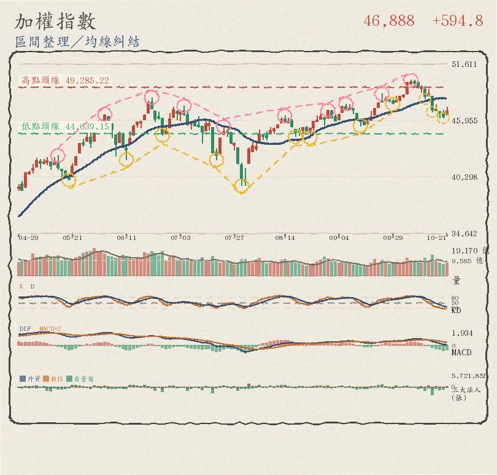
圖說：加權指數日 K（與個股圖相同標記）：黃圈＝轉折低點、粉圈＝轉折高點、虛線小圈＝還沒確認的轉折、藍線＝月線 MA20、水平虛線＝高點／低點頸線。最後一根是資料日當天。
本區塊為公開資料的技術面觀察，不構成投資建議，
不報牌、不預測、不下買賣決策。成交金額為集中市場總成交金額（含 ETF／權證），
與頁首摘要的「上市個股成交金額」口徑不同。標籤是統計，不是評分、也不是推薦。
上市 vs 上櫃（同期快篩）
加權 +1.28% vs 櫃買 +1.94%（同向） → 同向
（兩個市場分開寫，不合併成一個數字；櫃買為 TPEX 公開資料）
櫃買歷史：TPEX 逐日回補 130 根；來源：櫃買中心 www/zh-tw/indexInfo/sectinx（逐日，官方；OpenAPI tpex_index 只回當月）
（TPEX OpenAPI 只回當月，故逐日回補；歷史不足就不算該條均線並標「資料不足」，不用錯數字）
近 20 個交易日大盤狀態回溯（最新在上）（點開看逐日主狀態／量比／量價象限）
用同一支程式回算最近 20 個交易日（主狀態 S1~S8 與量比 20 皆為當日收盤當時的判定，
不是事後調整）；量比 20 未公布的日子寫「—」。
好條件最多的（前 10）
不好條件最多的（前 10）
好條件（8 項）：站上月線、月線向上、底底高、頭頭高、突破頸線、相對大盤強、攻擊量（量增＋上漲）、守住今日高檔（距今日高點 1% 內）。
不好條件（8 項）：跌破前低、今日下跌、相對大盤弱、在月線之下、量增下跌（出貨）、貼近今日低點（1% 內）、跌破昨日低點、月線下彎。
兩邊都是同一組日線資料＋盤中即時價算出來的「符合項目數」，只是把方向相反的條件分開數；
條件數不是評分或推薦，不構成投資建議。
逆勢上漲（加權下跌、個股上漲）（9 上市 8／上櫃 1）
盤中爆量（估量比 ≥ 1.5）（21 上市 13／上櫃 8）
跌破前低（線型轉弱）（29 上市 20／上櫃 9）
今日疲弱（跌幅前 10）（10 上市 6／上櫃 4）
逐檔（70 檔，依盤中成交金額排序）
台積電 2330 上市
2390 -30.0（-1.24%）
區間或轉弱 盤中成交值 291.27 億・全榜第 1 名（上市第 1 名）・相對大盤 +0.03
好條件 2/8：月線向上、相對大盤強
不好條件 3/8：今日下跌、在月線之下、跌破昨日低點
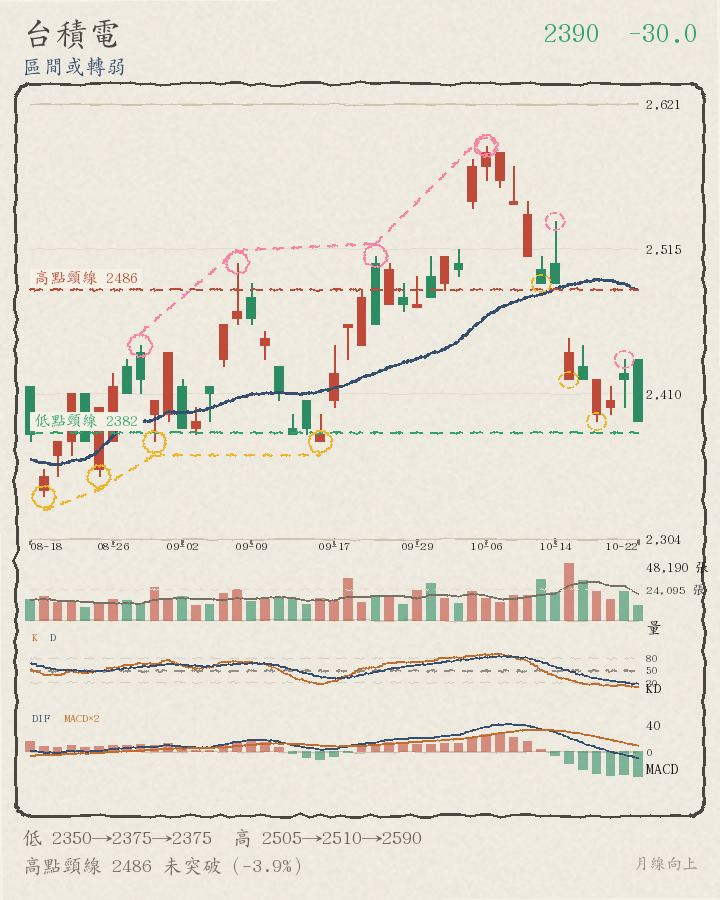
12:30 盤中 2390（-1.24%），比加權指數強 0.03 個百分點、跌破月線 2490，離高點頸線 2486 還差 3.9%，轉折還沒走出明顯方向。
- 月線位置：現價 2390 在月線 2490 之下（-4.0%）；5 日線 2421 也在月線之下（短均在下）；月線向上
- 量能：以已過交易時間推估，今天成交量約是 20 日均量的 0.67 倍（量縮），比 20 日均量少很多
- 關鍵價位：高點頸線 2486 還沒突破，差 3.9%；前一交易日高點 2435（低於 1.8%）；今天盤中高點 2435（低於 1.8%）；今天盤中低點 2390（高於 0.0%）
- 轉折結構：低點 2350、2375、2375 與高點 2505、2510、2590 都沒有明顯遞增，屬於區間震盪或轉弱；還沒確認的轉折低點 10-15 2420、10-19 2390；還沒確認的轉折高點 10-14 2535、10-21 2435（圖上虛線小圈）
聯茂 6213 上市
782 -41.0（-4.98%）
區間或轉弱 盤中成交值 255.96 億・全榜第 2 名（上市第 2 名）・相對大盤 -3.71
好條件 2/8：站上月線、月線向上
不好條件 4/8：今日下跌、相對大盤弱、量增下跌（出貨）、跌破昨日低點

12:30 盤中 782（-4.98%），比加權指數弱 3.71 個百分點、站上月線 715.2，離高點頸線 822 還差 4.9%，轉折還沒走出明顯方向。
- 月線位置：現價 782 在月線 715.2 之上（+9.3%）；5 日線 782.4 也在月線之上（短均在上）；月線向上
- 量能：以已過交易時間推估，今天成交量約是 20 日均量的 2.84 倍（爆量），比 20 日均量大不少；下跌卻量增，量價背離
- 關鍵價位：高點頸線 822 還沒突破，差 4.9%；前一交易日高點 823（低於 5.0%）；今天盤中高點 885（低於 11.6%）；今天盤中低點 771（高於 1.4%）
- 轉折結構：低點 493.5、482、731 與高點 599、555、858 都沒有明顯遞增，屬於區間震盪或轉弱；還沒確認的轉折低點 10-13 731、10-19 721；還沒確認的轉折高點 10-14 858、10-21 823（圖上虛線小圈）
南亞 1303 上市
302 -18.5（-5.77%）
高點墊高、底部不穩 盤中成交值 243.84 億・全榜第 3 名（上市第 3 名）・相對大盤 -4.50
好條件 3/8：站上月線、月線向上、頭頭高
不好條件 4/8：今日下跌、相對大盤弱、貼近今日低點（1% 內）、跌破昨日低點
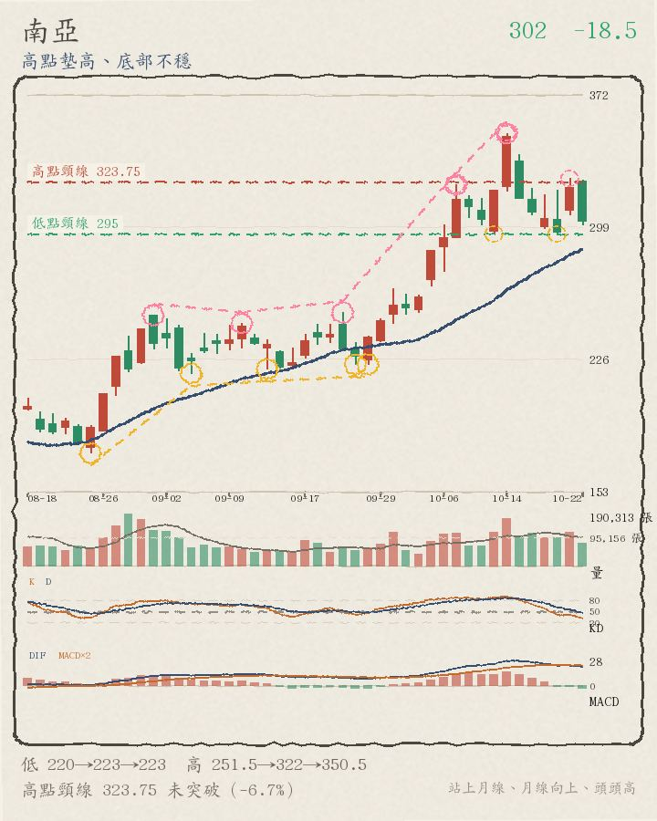
12:30 盤中 302（-5.77%），比加權指數弱 4.50 個百分點、站上月線 283.425，離高點頸線 323.75 還差 6.7%，高點還在墊高（但底部沒同步墊高）。
- 月線位置：現價 302 在月線 283.425 之上（+6.5%）；5 日線 308.3 也在月線之上（短均在上）；月線向上
- 量能：以已過交易時間推估，今天成交量約是 20 日均量的 1.15 倍（量增），比 20 日均量大不少；下跌卻量增，量價背離
- 關鍵價位：高點頸線 323.75 還沒突破，差 6.7%；前一交易日高點 325.5（低於 7.2%）；今天盤中高點 324.5（低於 6.9%）；今天盤中低點 300（高於 0.7%）
- 轉折結構：高點 251.5、322、350.5 墊高（頭頭高），但低點 220.5、223、223 沒有同步墊高；還沒確認的轉折低點 10-13 295、10-20 295；還沒確認的轉折高點 10-14 350.5、10-21 325.5（圖上虛線小圈）
臻鼎-KY 4958 上市
578 +0.0（+0.00%）
底部墊高、未過前高 盤中成交值 214.03 億・全榜第 4 名（上市第 4 名）・相對大盤 +1.27
好條件 4/8：站上月線、月線向上、底底高、相對大盤強
不好條件 0/8：無
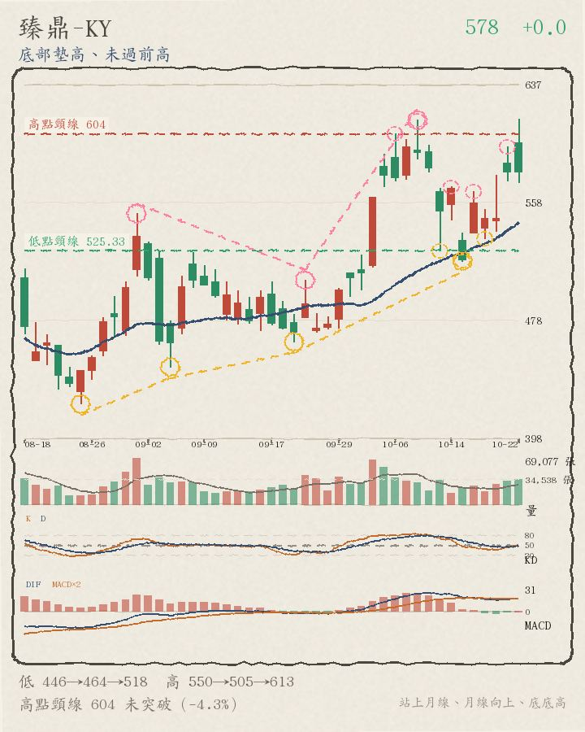
12:30 盤中 578（+0.00%），比加權指數強 1.27 個百分點、站上月線 538.45，離高點頸線 604 還差 4.3%，底部還在墊高（但高點沒同步創高）。
- 月線位置：現價 578 在月線 538.45 之上（+7.3%）；5 日線 549.6 也在月線之上（短均在上）；月線向上
- 量能：以已過交易時間推估，今天成交量約是 20 日均量的 1.45 倍（量增），比 20 日均量大不少
- 關鍵價位：高點頸線 604 還沒突破，差 4.3%；前一交易日高點 595（低於 2.9%）；今天盤中高點 614（低於 5.9%）；今天盤中低點 571（高於 1.2%）
- 轉折結構：低點 446.5、463.5、518 墊高（底底高），但高點 550、505、613 沒有同步創高；還沒確認的轉折低點 10-15 518、10-19 533；還沒確認的轉折高點 10-16 565、10-21 595（圖上虛線小圈）
台燿 6274 上櫃
1455 -45.0（-3.00%）
高點墊高、底部不穩 盤中成交值 208.59 億・全榜第 5 名（上櫃第 1 名）・相對大盤 -1.73
好條件 2/8：月線向上、頭頭高
不好條件 6/8：今日下跌、相對大盤弱、在月線之下、量增下跌（出貨）、貼近今日低點（1% 內）、跌破昨日低點
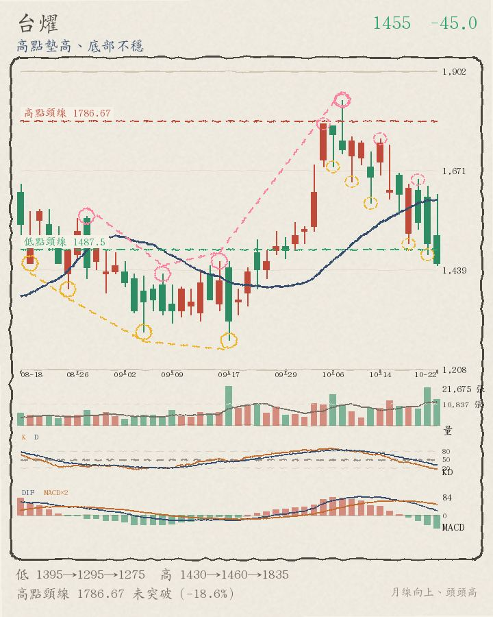
12:30 盤中 1455（-3.00%），比加權指數弱 1.73 個百分點、跌破月線 1601.5，離高點頸線 1786.67 還差 18.6%，高點還在墊高（但底部沒同步墊高）。
- 月線位置：現價 1455 在月線 1601.5 之下（-9.2%）；5 日線 1584 也在月線之下（短均在下）；月線向上
- 量能：以已過交易時間推估，今天成交量約是 20 日均量的 1.94 倍（爆量），比 20 日均量大不少；下跌卻量增，量價背離
- 關鍵價位：高點頸線 1786.67 還沒突破，差 18.6%；前一交易日高點 1635（低於 11.0%）；今天盤中高點 1615（低於 9.9%）；今天盤中低點 1450（高於 0.3%）
- 轉折結構：高點 1430、1460、1835 墊高（頭頭高），但低點 1395、1295、1275 沒有同步墊高；還沒確認的轉折低點 10-19 1500、10-21 1475；還沒確認的轉折高點 10-14 1745、10-20 1650（圖上虛線小圈）
台光電 2383 上市
5110 +120.0（+2.40%）
區間或轉弱 盤中成交值 192.7 億・全榜第 6 名（上市第 5 名）・相對大盤 +3.67
好條件 3/8：月線向上、相對大盤強、攻擊量（量增＋上漲）
不好條件 2/8：在月線之下、貼近今日低點（1% 內）

12:30 盤中 5110（+2.40%），比加權指數強 3.67 個百分點、跌破月線 5302.25，離高點頸線 5187.5 還差 1.5%，轉折還沒走出明顯方向。
- 月線位置：現價 5110 在月線 5302.25 之下（-3.6%）；5 日線 5069 也在月線之下（短均在下）；月線向上
- 量能：以已過交易時間推估，今天成交量約是 20 日均量的 2.02 倍（爆量），比 20 日均量大不少；上漲又量增，量價配合
- 關鍵價位：高點頸線 5187.5 還沒突破，差 1.5%；前一交易日高點 5205（低於 1.8%）；今天盤中高點 5485（低於 6.8%）；今天盤中低點 5105（高於 0.1%）
- 轉折結構：低點 5255、4635、4855 與高點 5645、5170、6325 都沒有明顯遞增，屬於區間震盪或轉弱；還沒確認的轉折低點 10-15 4980、10-20 4930；還沒確認的轉折高點 10-12 6190、10-21 5205（圖上虛線小圈）
欣興 3037 上市
1095 -5.0（-0.45%）
高點墊高、底部不穩 盤中成交值 180.59 億・全榜第 7 名（上市第 6 名）・相對大盤 +0.82
好條件 3/8：月線向上、頭頭高、相對大盤強
不好條件 3/8：今日下跌、在月線之下、量增下跌（出貨）
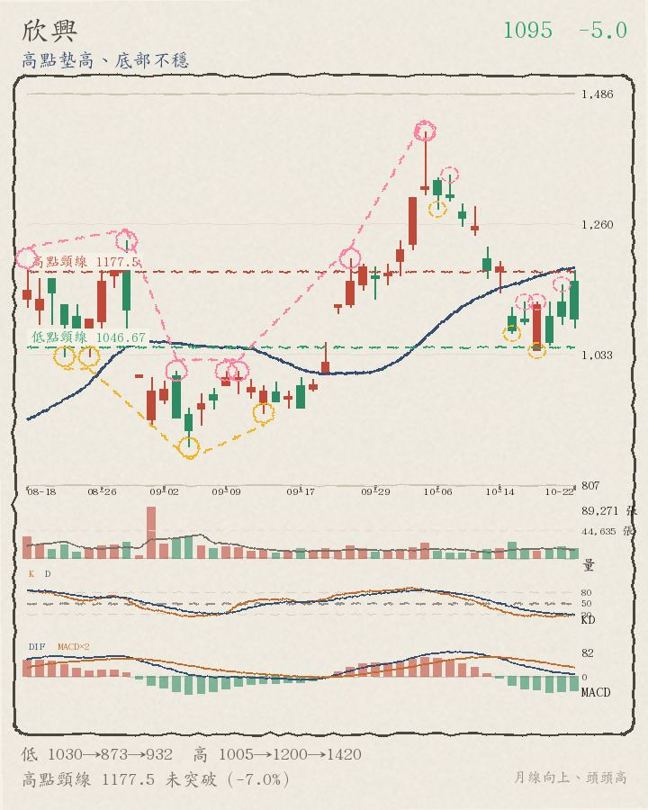
12:30 盤中 1095（-0.45%），比加權指數強 0.82 個百分點、跌破月線 1180.75，離高點頸線 1177.5 還差 7.0%，高點還在墊高（但底部沒同步墊高）。
- 月線位置：現價 1095 在月線 1180.75 之下（-7.3%）；5 日線 1088 也在月線之下（短均在下）；月線向上
- 量能：以已過交易時間推估，今天成交量約是 20 日均量的 1.44 倍（量增），比 20 日均量大不少；下跌卻量增，量價背離
- 關鍵價位：高點頸線 1177.5 還沒突破，差 7.0%；前一交易日高點 1155（低於 5.2%）；今天盤中高點 1180（低於 7.2%）；今天盤中低點 1080（高於 1.4%）
- 轉折結構：高點 1005、1200、1420 墊高（頭頭高），但低點 1030、873、932 沒有同步墊高；還沒確認的轉折低點 10-15 1070、10-19 1040；還沒確認的轉折高點 10-19 1125、10-21 1155（圖上虛線小圈）
富喬 1815 上櫃
139 -8.0（-5.44%）
上升趨勢（底底高＋頭頭高） 盤中成交值 178.68 億・全榜第 8 名（上櫃第 2 名）・相對大盤 -4.17
好條件 5/8：站上月線、月線向上、底底高、頭頭高、突破頸線
不好條件 4/8：今日下跌、相對大盤弱、量增下跌（出貨）、跌破昨日低點
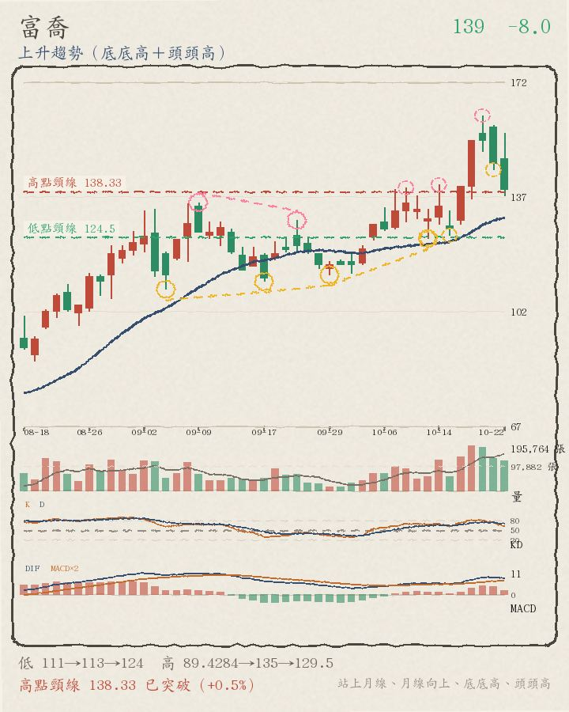
12:30 盤中 139（-5.44%），比加權指數弱 4.17 個百分點、站上月線 129.525，已突破高點頸線 138.33，轉折結構仍是底底高＋頭頭高。
- 月線位置：現價 139 在月線 129.525 之上（+7.3%）；5 日線 144.5 也在月線之上（短均在上）；月線向上
- 量能：以已過交易時間推估，今天成交量約是 20 日均量的 2.09 倍（爆量），比 20 日均量大不少；下跌卻量增，量價背離
- 關鍵價位：高點頸線 138.33 已站上；前一交易日高點 158.5（低於 12.3%）；今天盤中高點 156（低於 10.9%）；今天盤中低點 137（高於 1.5%）
- 轉折結構：低點 111、113、124 一路墊高、高點 89.4284、135、129.5 也一路墊高，是底底高＋頭頭高；還沒確認的轉折低點 10-15 125、10-21 145；還沒確認的轉折高點 10-14 140.5、10-20 161.5（圖上虛線小圈）
華新科 2492 上市
372 -33.5（-8.26%）
底部墊高、未過前高 盤中成交值 173.54 億・全榜第 9 名（上市第 7 名）・相對大盤 -6.99
好條件 3/8：站上月線、月線向上、底底高
不好條件 6/8：跌破前低、今日下跌、相對大盤弱、量增下跌（出貨）、貼近今日低點（1% 內）、跌破昨日低點
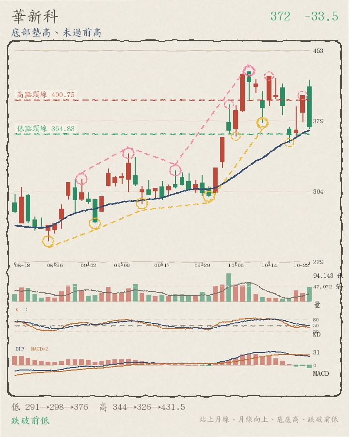
12:30 盤中 372（-8.26%），比加權指數弱 6.99 個百分點、站上月線 365.5，離高點頸線 400.75 還差 7.2%，底部還在墊高（但高點沒同步創高）。
- 月線位置：現價 372 在月線 365.5 之上（+1.8%）；5 日線 387.8 也在月線之上（短均在上）；月線向上
- 量能：以已過交易時間推估，今天成交量約是 20 日均量的 1.94 倍（爆量），比 20 日均量大不少；下跌卻量增，量價背離
- 關鍵價位：已跌破前一個轉折低點；高點頸線 400.75 還在現價上方 7.2%；前一交易日高點 405.5（低於 8.3%）；今天盤中高點 422（低於 11.8%）；今天盤中低點 370（高於 0.5%）
- 轉折結構：低點 291、298.5、376.5 墊高（底底高），但高點 344、326、431.5 沒有同步創高；還沒確認的轉折低點 10-13 376.5、10-19 355.5；還沒確認的轉折高點 10-14 426、10-21 405.5（圖上虛線小圈）
國巨* 2327 上市
514 -28.0（-5.17%）
區間或轉弱 盤中成交值 158.78 億・全榜第 10 名（上市第 8 名）・相對大盤 -3.90
好條件 1/8：月線向上
不好條件 6/8：跌破前低、今日下跌、相對大盤弱、在月線之下、貼近今日低點（1% 內）、跌破昨日低點
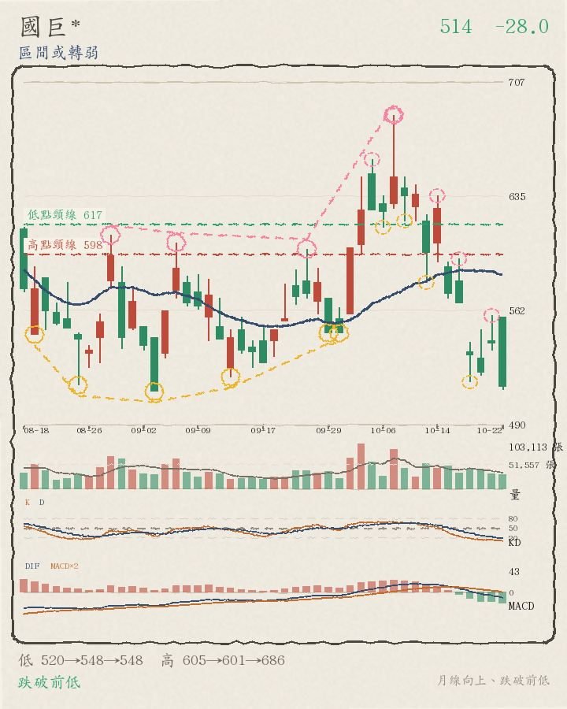
12:30 盤中 514（-5.17%），比加權指數弱 3.90 個百分點、跌破月線 586.95，離高點頸線 598 還差 14.0%，轉折還沒走出明顯方向。
- 月線位置：現價 514 在月線 586.95 之下（-12.4%）；5 日線 547.8 也在月線之下（短均在下）；月線向上
- 量能：以已過交易時間推估，今天成交量約是 20 日均量的 0.85 倍（量平），比 20 日均量少一些
- 關鍵價位：已跌破前一個轉折低點；高點頸線 598 還在現價上方 14.0%；前一交易日高點 559（低於 8.1%）；今天盤中高點 558（低於 7.9%）；今天盤中低點 512（高於 0.4%）
- 轉折結構：低點 520、548、548 與高點 605、601、686 都沒有明顯遞增，屬於區間震盪或轉弱；還沒確認的轉折低點 10-13 580、10-19 517；還沒確認的轉折高點 10-16 595、10-21 559（圖上虛線小圈）
台玻 1802 上市
67.5 +0.3（+0.45%）
高點墊高、底部不穩 盤中成交值 157.85 億・全榜第 11 名（上市第 9 名）・相對大盤 +1.72
好條件 6/8：站上月線、月線向上、頭頭高、突破頸線、相對大盤強、攻擊量（量增＋上漲）
不好條件 1/8：貼近今日低點（1% 內）
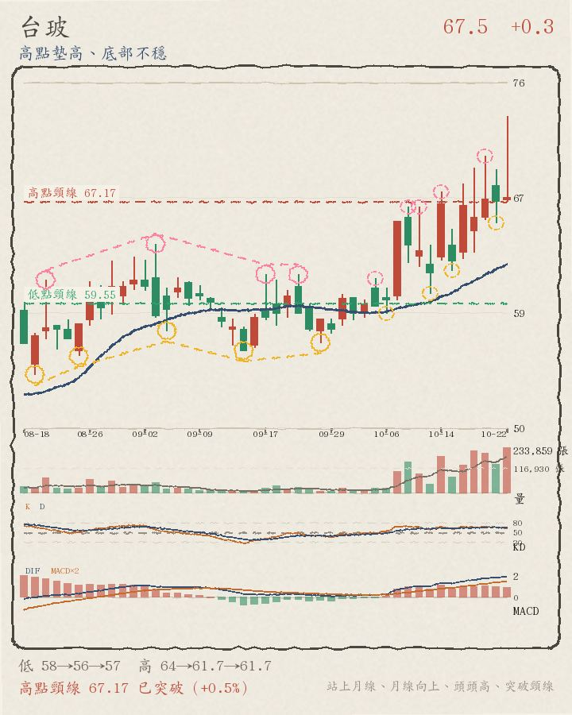
12:30 盤中 67.5（+0.45%），比加權指數強 1.72 個百分點、站上月線 62.095，已突破高點頸線 67.17，高點還在墊高（但底部沒同步墊高）。
- 月線位置：現價 67.5 在月線 62.095 之上（+8.7%）；5 日線 66.04 也在月線之上（短均在上）；月線向上
- 量能：以已過交易時間推估，今天成交量約是 20 日均量的 4.16 倍（爆量），比 20 日均量大不少；上漲又量增，量價配合
- 關鍵價位：高點頸線 67.17 已站上；前一交易日高點 69.6（低於 3.0%）；今天盤中高點 73.6（低於 8.3%）；今天盤中低點 67.2（高於 0.4%）
- 轉折結構：高點 64、61.7、61.7 墊高（頭頭高），但低點 57.5、56、56.6 沒有同步墊高；還沒確認的轉折低點 10-15 62、10-21 65.6；還沒確認的轉折高點 10-14 67.9、10-20 70.6（圖上虛線小圈）
聯發科 2454 上市
4070 -70.0（-1.69%）
底部墊高、未過前高 盤中成交值 152.91 億・全榜第 12 名（上市第 10 名）・相對大盤 -0.42
好條件 1/8：底底高
不好條件 7/8：跌破前低、今日下跌、相對大盤弱、在月線之下、貼近今日低點（1% 內）、跌破昨日低點、月線下彎
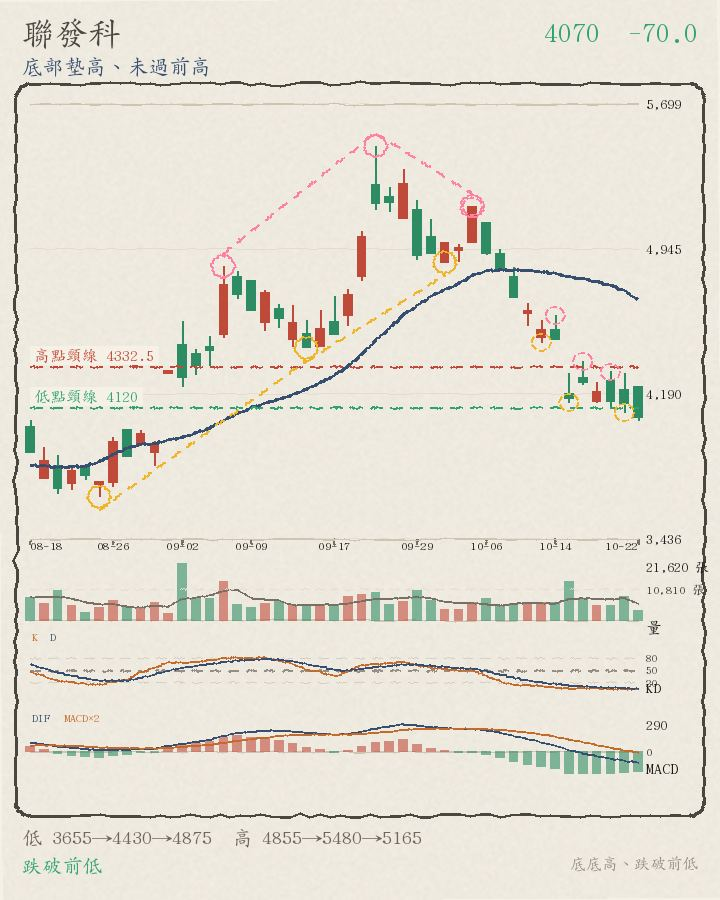
12:30 盤中 4070（-1.69%），比加權指數弱 0.42 個百分點、跌破月線 4728.25，離高點頸線 4332.5 還差 6.1%，底部還在墊高（但高點沒同步創高）。
- 月線位置：現價 4070 在月線 4728.25 之下（-13.9%）；5 日線 4182 也在月線之下（短均在下）；月線向下
- 量能：以已過交易時間推估，今天成交量約是 20 日均量的 0.65 倍（量縮），比 20 日均量少很多
- 關鍵價位：已跌破前一個轉折低點；高點頸線 4332.5 還在現價上方 6.1%；前一交易日高點 4295（低於 5.2%）；今天盤中高點 4230（低於 3.8%）；今天盤中低點 4050（高於 0.5%）
- 轉折結構：低點 3655、4430、4875 墊高（底底高），但高點 4855、5480、5165 沒有同步創高；還沒確認的轉折低點 10-15 4145、10-21 4095；還沒確認的轉折高點 10-16 4360、10-20 4305（圖上虛線小圈）
景碩 3189 上市
989 -21.0（-2.08%）
區間或轉弱 盤中成交值 152.12 億・全榜第 13 名（上市第 11 名）・相對大盤 -0.81
好條件 1/8：月線向上
不好條件 4/8：今日下跌、相對大盤弱、在月線之下、貼近今日低點（1% 內）
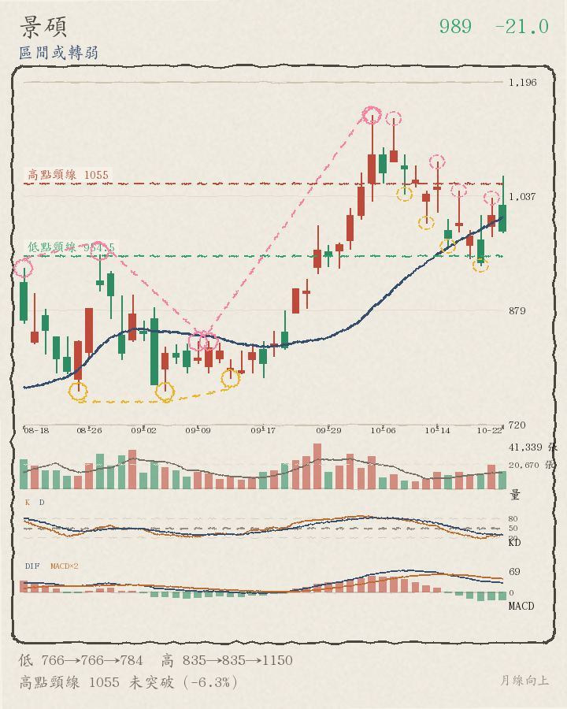
12:30 盤中 989（-2.08%），比加權指數弱 0.81 個百分點、跌破月線 999.75，離高點頸線 1055 還差 6.3%，轉折還沒走出明顯方向。
- 月線位置：現價 989 在月線 999.75 之下（-1.1%）；5 日線 983.2 也在月線之下（短均在下）；月線向上
- 量能：以已過交易時間推估，今天成交量約是 20 日均量的 1.09 倍（量平），比 20 日均量大一些
- 關鍵價位：高點頸線 1055 還沒突破，差 6.3%；前一交易日高點 1035（低於 4.4%）；今天盤中高點 1065（低於 7.1%）；今天盤中低點 986（高於 0.3%）
- 轉折結構：低點 766、766、784 與高點 835、835、1150 都沒有明顯遞增，屬於區間震盪或轉弱；還沒確認的轉折低點 10-15 968、10-20 941；還沒確認的轉折高點 10-16 1045、10-21 1035（圖上虛線小圈）
玉晶光 3406 上市
1160 +20.0（+1.75%）
區間或轉弱 盤中成交值 111.36 億・全榜第 14 名（上市第 12 名）・相對大盤 +3.02
好條件 5/8：站上月線、月線向上、突破頸線、相對大盤強、攻擊量（量增＋上漲）
不好條件 0/8：無
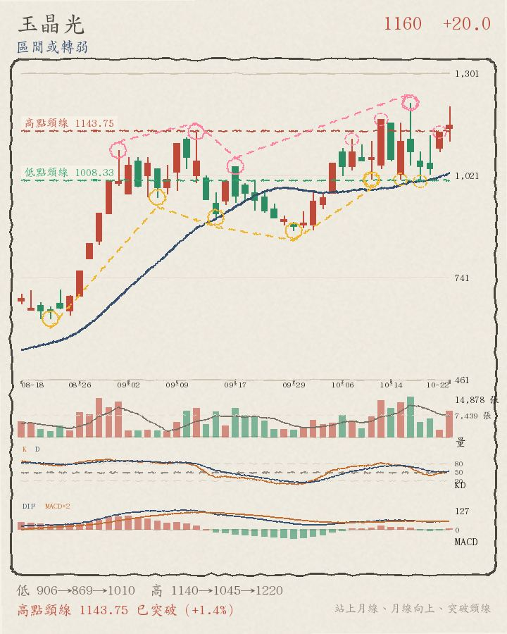
12:30 盤中 1160（+1.75%），比加權指數強 3.02 個百分點、站上月線 1017.2，已突破高點頸線 1143.75，轉折還沒走出明顯方向。
- 月線位置：現價 1160 在月線 1017.2 之上（+14.0%）；5 日線 1085 也在月線之上（短均在上）；月線向上
- 量能：以已過交易時間推估，今天成交量約是 20 日均量的 1.80 倍（爆量），比 20 日均量大不少；上漲又量增，量價配合
- 關鍵價位：高點頸線 1143.75 已站上；前一交易日高點 1140（高於 1.8%）；今天盤中高點 1210（低於 4.1%）；今天盤中低點 1115（高於 4.0%）
- 轉折結構：低點 906、869、1010 與高點 1140、1045、1220 都沒有明顯遞增，屬於區間震盪或轉弱；還沒確認的轉折低點 10-15 1010、10-19 1005；還沒確認的轉折高點 10-16 1220、10-21 1140（圖上虛線小圈）
穩懋 3105 上櫃
489 -23.0（-4.49%）
區間或轉弱 盤中成交值 95.88 億・全榜第 15 名（上櫃第 3 名）・相對大盤 -3.22
好條件 2/8：月線向上、突破頸線
不好條件 5/8：今日下跌、相對大盤弱、在月線之下、貼近今日低點（1% 內）、跌破昨日低點
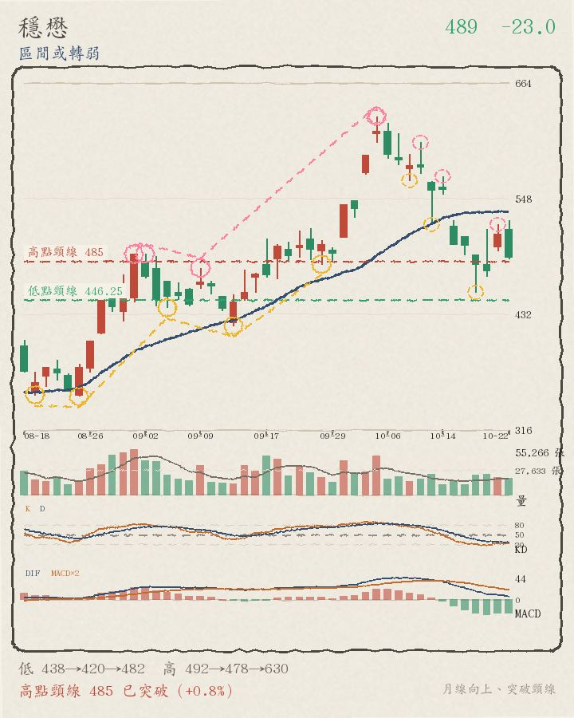
12:30 盤中 489（-4.49%），比加權指數弱 3.22 個百分點、跌破月線 534.775，已突破高點頸線 485，轉折還沒走出明顯方向。
- 月線位置：現價 489 在月線 534.775 之下（-8.6%）；5 日線 494.4 也在月線之下（短均在下）；月線向上
- 量能：以已過交易時間推估，今天成交量約是 20 日均量的 1.01 倍（量平），跟 20 日均量差不多
- 關鍵價位：高點頸線 485 已站上；前一交易日高點 522（低於 6.3%）；今天盤中高點 526（低於 7.0%）；今天盤中低點 487（高於 0.4%）
- 轉折結構：低點 438.5、420、482 與高點 492、478、630 都沒有明顯遞增，屬於區間震盪或轉弱；還沒確認的轉折低點 10-13 522、10-19 454；還沒確認的轉折高點 10-14 570、10-21 522（圖上虛線小圈）
南亞科 2408 上市
418.5 -18.0（-4.12%）
區間或轉弱 盤中成交值 88.77 億・全榜第 16 名（上市第 13 名）・相對大盤 -2.85
好條件 0/8：無
不好條件 7/8：跌破前低、今日下跌、相對大盤弱、在月線之下、貼近今日低點（1% 內）、跌破昨日低點、月線下彎
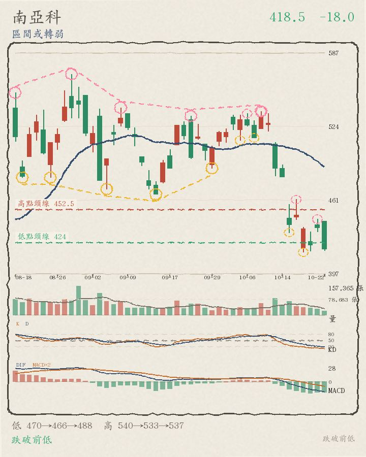
12:30 盤中 418.5（-4.12%），比加權指數弱 2.85 個百分點、跌破月線 493.95，離高點頸線 452.5 還差 7.5%，轉折還沒走出明顯方向。
- 月線位置：現價 418.5 在月線 493.95 之下（-15.3%）；5 日線 436.3 也在月線之下（短均在下）；月線向下
- 量能：以已過交易時間推估，今天成交量約是 20 日均量的 0.58 倍（量縮），比 20 日均量少很多
- 關鍵價位：已跌破前一個轉折低點；高點頸線 452.5 還在現價上方 7.5%；前一交易日高點 444（低於 5.7%）；今天盤中高點 442.5（低於 5.4%）；今天盤中低點 417（高於 0.4%）
- 轉折結構：低點 470、465.5、488 與高點 540、533、537 都沒有明顯遞增，屬於區間震盪或轉弱；還沒確認的轉折低點 10-15 432.5、10-19 415.5；還沒確認的轉折高點 10-16 461、10-21 444（圖上虛線小圈）
台達電 2308 上市
1570 -55.0（-3.38%）
高點墊高、底部不穩 盤中成交值 88.44 億・全榜第 17 名（上市第 14 名）・相對大盤 -2.11
好條件 1/8：頭頭高
不好條件 6/8：跌破前低、今日下跌、相對大盤弱、在月線之下、跌破昨日低點、月線下彎
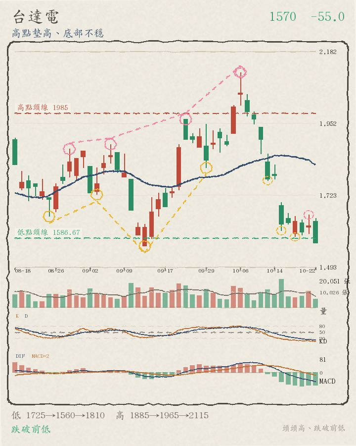
12:30 盤中 1570（-3.38%），比加權指數弱 2.11 個百分點、跌破月線 1835.25，離高點頸線 1985 還差 20.9%，高點還在墊高（但底部沒同步墊高）。
- 月線位置：現價 1570 在月線 1835.25 之下（-14.4%）；5 日線 1627 也在月線之下（短均在下）；月線向下
- 量能：以已過交易時間推估，今天成交量約是 20 日均量的 0.68 倍（量縮），比 20 日均量少很多
- 關鍵價位：已跌破前一個轉折低點；高點頸線 1985 還在現價上方 20.9%；前一交易日高點 1660（低於 5.4%）；今天盤中高點 1650（低於 4.8%）；今天盤中低點 1570（高於 0.0%）
- 轉折結構：高點 1885、1965、2115 墊高（頭頭高），但低點 1725、1560、1810 沒有同步墊高；還沒確認的轉折低點 10-15 1610、10-19 1590；還沒確認的轉折高點 10-06 2115、10-21 1660（圖上虛線小圈）
大立光 3008 上市
6175 +5.0（+0.08%）
區間或轉弱 盤中成交值 82.07 億・全榜第 18 名（上市第 15 名）・相對大盤 +1.35
好條件 2/8：月線向上、相對大盤強
不好條件 3/8：跌破前低、在月線之下、貼近今日低點（1% 內）
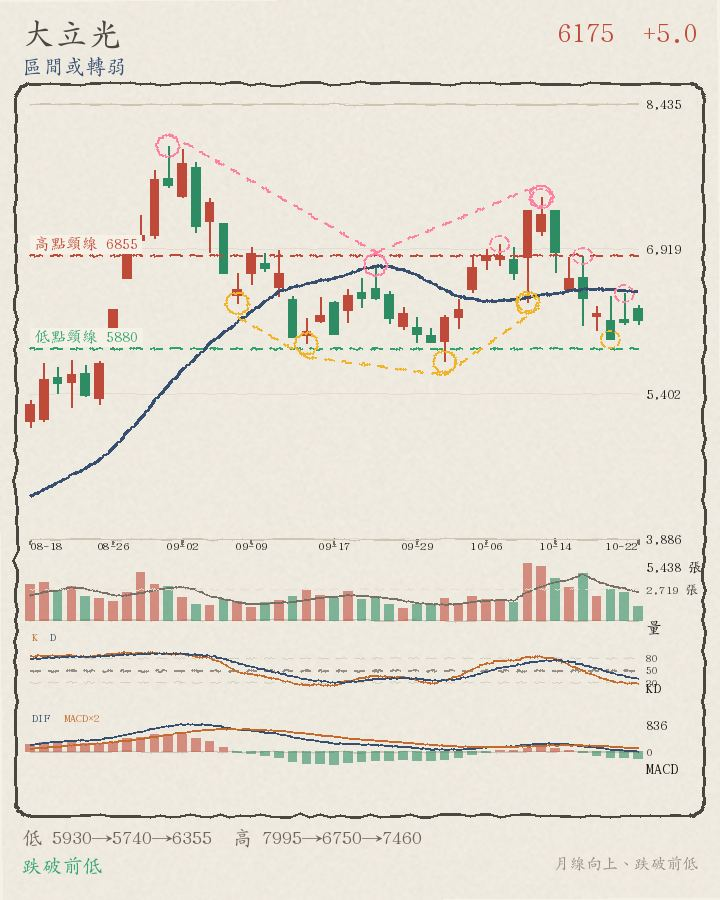
12:30 盤中 6175（+0.08%），比加權指數強 1.35 個百分點、跌破月線 6483.25，離高點頸線 6855 還差 9.9%，轉折還沒走出明顯方向。
- 月線位置：現價 6175 在月線 6483.25 之下（-4.8%）；5 日線 6279 也在月線之下（短均在下）；月線向上
- 量能：以已過交易時間推估，今天成交量約是 20 日均量的 0.67 倍（量縮），比 20 日均量少很多；上漲但量縮，量價背離
- 關鍵價位：已跌破前一個轉折低點；高點頸線 6855 還在現價上方 9.9%；前一交易日高點 6450（低於 4.3%）；今天盤中高點 6330（低於 2.4%）；今天盤中低點 6125（高於 0.8%）
- 轉折結構：低點 5930、5740、6355 與高點 7995、6750、7460 都沒有明顯遞增，屬於區間震盪或轉弱；還沒確認的轉折低點 10-12 6355、10-20 5970；還沒確認的轉折高點 10-16 6845、10-21 6450（圖上虛線小圈）
精材 3374 上櫃
465.5 -5.0（-1.06%）
底部墊高、未過前高 盤中成交值 81.13 億・全榜第 19 名（上櫃第 4 名）・相對大盤 +0.21
好條件 3/8：月線向上、底底高、相對大盤強
不好條件 4/8：今日下跌、在月線之下、量增下跌（出貨）、貼近今日低點（1% 內）
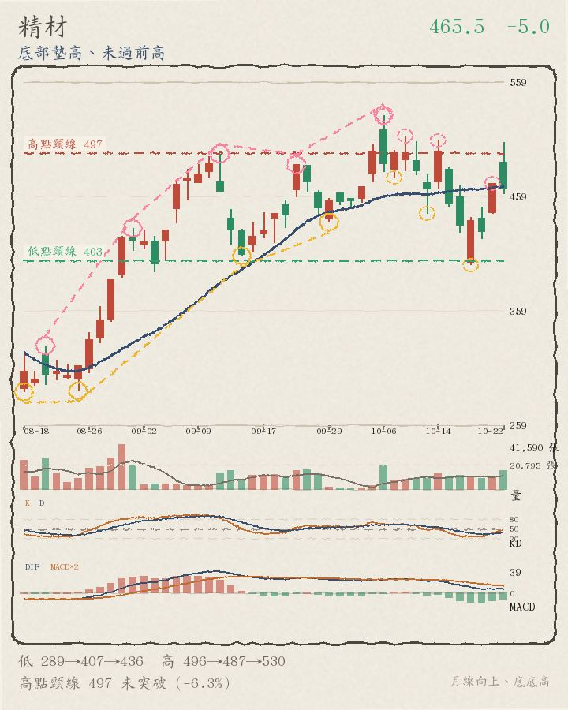
12:30 盤中 465.5（-1.06%），比加權指數強 0.21 個百分點、跌破月線 466.625，離高點頸線 497 還差 6.3%，底部還在墊高（但高點沒同步創高）。
- 月線位置：現價 465.5 在月線 466.625 之下（-0.2%）；5 日線 444.5 也在月線之下（短均在下）；月線向上
- 量能：以已過交易時間推估，今天成交量約是 20 日均量的 2.24 倍（爆量），比 20 日均量大不少；下跌卻量增，量價背離
- 關鍵價位：高點頸線 497 還沒突破，差 6.3%；前一交易日高點 470.5（低於 1.1%）；今天盤中高點 506（低於 8.0%）；今天盤中低點 461.5（高於 0.9%）
- 轉折結構：低點 289、407、436.5 墊高（底底高），但高點 496、487、530 沒有同步創高；還沒確認的轉折低點 10-13 444、10-19 399；還沒確認的轉折高點 10-14 508、10-21 470.5（圖上虛線小圈）
日月光投控 3711 上市
661 -23.0（-3.36%）
上升趨勢（底底高＋頭頭高） 盤中成交值 80.85 億・全榜第 20 名（上市第 16 名）・相對大盤 -2.09
好條件 3/8：月線向上、底底高、頭頭高
不好條件 6/8：跌破前低、今日下跌、相對大盤弱、在月線之下、貼近今日低點（1% 內）、跌破昨日低點
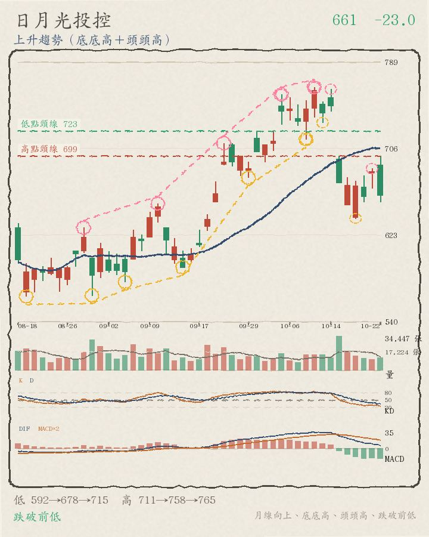
12:30 盤中 661（-3.36%），比加權指數弱 2.09 個百分點、跌破月線 706.5，離高點頸線 699 還差 5.4%，轉折結構仍是底底高＋頭頭高。
- 月線位置：現價 661 在月線 706.5 之下（-6.4%）；5 日線 671.6 也在月線之下（短均在下）；月線向上
- 量能：以已過交易時間推估，今天成交量約是 20 日均量的 1.02 倍（量平），跟 20 日均量差不多
- 關鍵價位：已跌破前一個轉折低點；高點頸線 699 還在現價上方 5.4%；前一交易日高點 687（低於 3.8%）；今天盤中高點 699（低於 5.4%）；今天盤中低點 655（高於 0.9%）
- 轉折結構：低點 592、678、715 一路墊高、高點 711、758、765 也一路墊高，是底底高＋頭頭高；還沒確認的轉折低點 10-13 731、10-19 639；還沒確認的轉折高點 10-14 763、10-21 687（圖上虛線小圈）
金像電 2368 上市
1150 -45.0（-3.77%）
區間或轉弱 盤中成交值 79.76 億・全榜第 21 名（上市第 17 名）・相對大盤 -2.50
好條件 1/8：月線向上
不好條件 4/8：今日下跌、相對大盤弱、在月線之下、跌破昨日低點
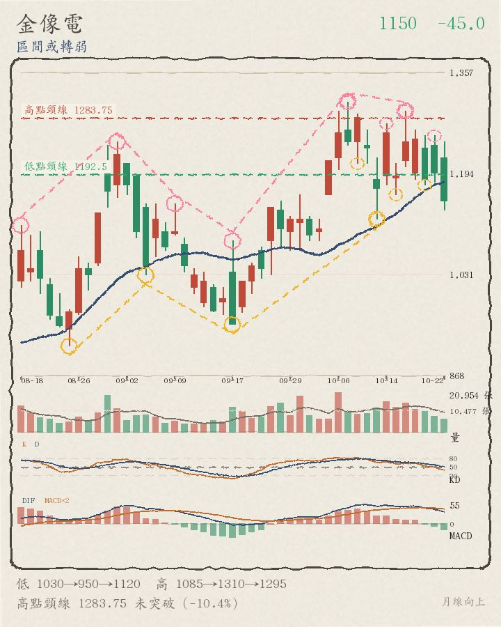
12:30 盤中 1150（-3.77%），比加權指數弱 2.50 個百分點、跌破月線 1175.25，離高點頸線 1283.75 還差 10.4%，轉折還沒走出明顯方向。
- 月線位置：現價 1150 在月線 1175.25 之下（-2.1%）；5 日線 1213 也在月線之上（短均在上）；月線向上
- 量能：以已過交易時間推估，今天成交量約是 20 日均量的 0.76 倍（量平），比 20 日均量少很多
- 關鍵價位：高點頸線 1283.75 還沒突破，差 10.4%；前一交易日高點 1255（低於 8.4%）；今天盤中高點 1245（低於 7.6%）；今天盤中低點 1135（高於 1.3%）
- 轉折結構：低點 1030、950、1120 與高點 1085、1310、1295 都沒有明顯遞增，屬於區間震盪或轉弱；還沒確認的轉折低點 10-15 1160、10-20 1175；還沒確認的轉折高點 10-16 1295、10-21 1255（圖上虛線小圈）
聯電 2303 上市
126.5 -1.5（-1.17%）
底部墊高、未過前高 盤中成交值 78.22 億・全榜第 22 名（上市第 18 名）・相對大盤 +0.10
好條件 2/8：底底高、相對大盤強
不好條件 6/8：跌破前低、今日下跌、在月線之下、貼近今日低點（1% 內）、跌破昨日低點、月線下彎
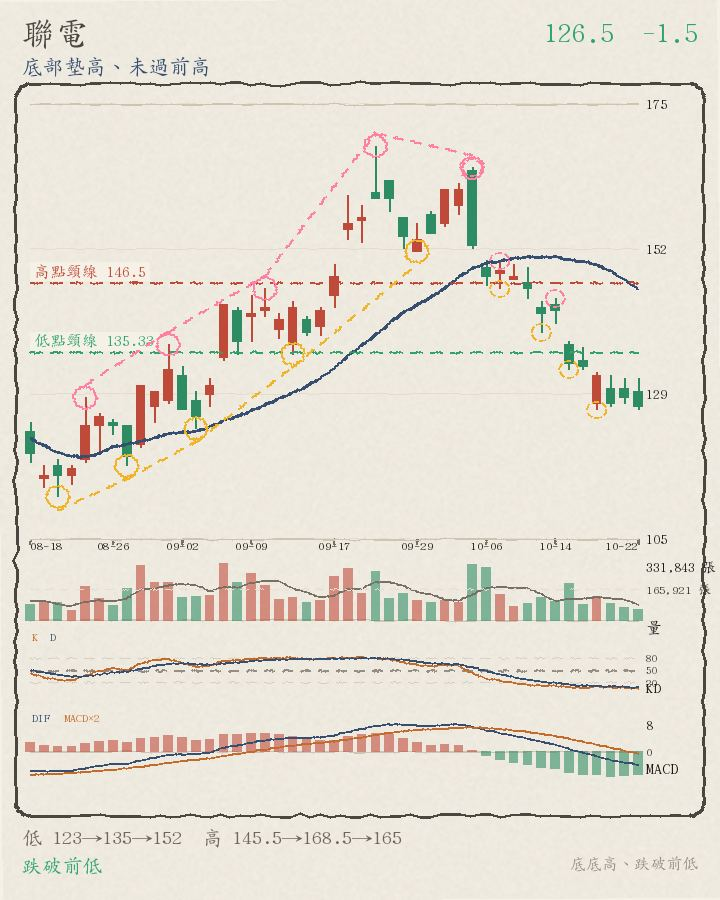
12:30 盤中 126.5（-1.17%），比加權指數強 0.10 個百分點、跌破月線 147，離高點頸線 146.5 還差 13.7%，底部還在墊高（但高點沒同步創高）。
- 月線位置：現價 126.5 在月線 147 之下（-13.9%）；5 日線 130.6 也在月線之下（短均在下）；月線向下
- 量能：以已過交易時間推估，今天成交量約是 20 日均量的 0.50 倍（量縮），比 20 日均量少很多
- 關鍵價位：已跌破前一個轉折低點；高點頸線 146.5 還在現價上方 13.7%；前一交易日高點 131（低於 3.4%）；今天盤中高點 131（低於 3.4%）；今天盤中低點 126（高於 0.4%）
- 轉折結構：低點 123、135、151.5 墊高（底底高），但高點 145.5、168.5、165 沒有同步創高；還沒確認的轉折低點 10-15 132.5、10-19 126；還沒確認的轉折高點 10-07 150、10-14 144（圖上虛線小圈）
創意 3443 上市
7720 -280.0（-3.50%）
上升趨勢（底底高＋頭頭高） 盤中成交值 78.05 億・全榜第 23 名（上市第 19 名）・相對大盤 -2.23
好條件 3/8：月線向上、底底高、頭頭高
不好條件 6/8：跌破前低、今日下跌、相對大盤弱、在月線之下、貼近今日低點（1% 內）、跌破昨日低點
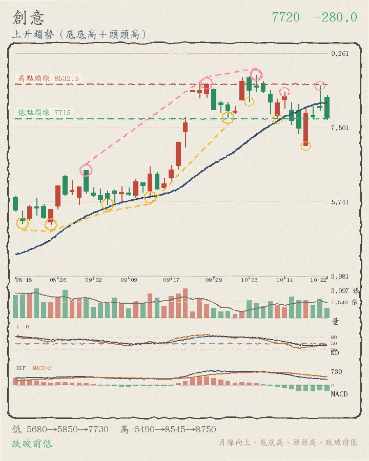
12:30 盤中 7720（-3.50%），比加權指數弱 2.23 個百分點、跌破月線 8081.25，離高點頸線 8532.5 還差 9.5%，轉折結構仍是底底高＋頭頭高。
- 月線位置：現價 7720 在月線 8081.25 之下（-4.5%）；5 日線 7745 也在月線之下（短均在下）；月線向上
- 量能：以已過交易時間推估，今天成交量約是 20 日均量的 0.91 倍（量平），比 20 日均量少一些
- 關鍵價位：已跌破前一個轉折低點；高點頸線 8532.5 還在現價上方 9.5%；前一交易日高點 8490（低於 9.1%）；今天盤中高點 8275（低於 6.7%）；今天盤中低點 7685（高於 0.5%）
- 轉折結構：低點 5680、5850、7730 一路墊高、高點 6490、8545、8750 也一路墊高，是底底高＋頭頭高；還沒確認的轉折低點 10-13 7700、10-19 7065；還沒確認的轉折高點 10-14 8345、10-21 8490（圖上虛線小圈）
禾伸堂 3026 上市
765 -50.0（-6.13%）
高點墊高、底部不穩 盤中成交值 74.16 億・全榜第 24 名（上市第 20 名）・相對大盤 -4.86
好條件 2/8：月線向上、頭頭高
不好條件 5/8：跌破前低、今日下跌、相對大盤弱、在月線之下、跌破昨日低點
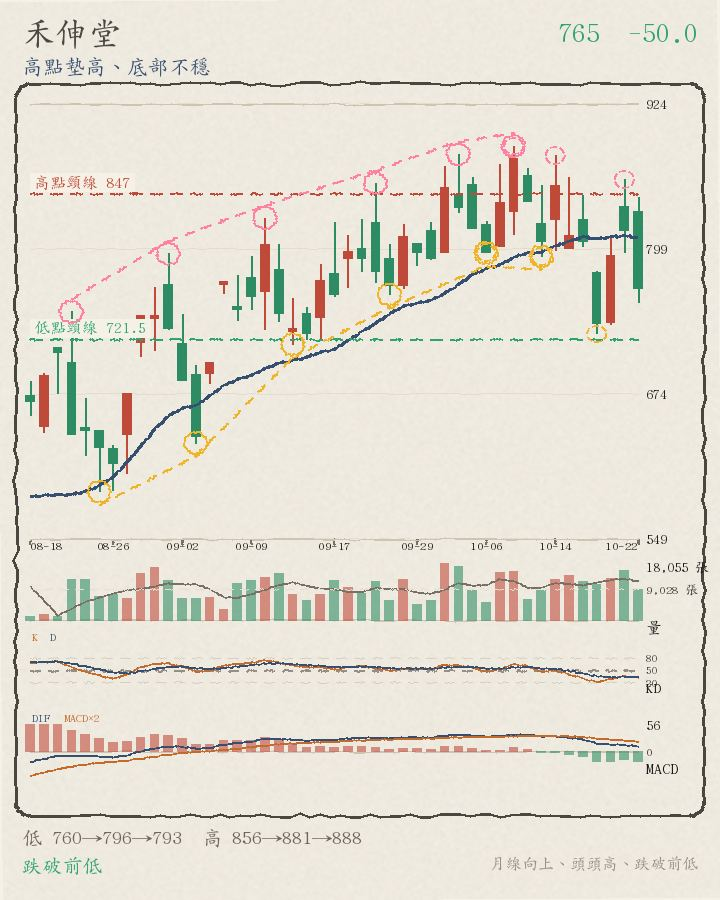
12:30 盤中 765（-6.13%），比加權指數弱 4.86 個百分點、跌破月線 810.65，離高點頸線 847 還差 9.7%，高點還在墊高（但底部沒同步墊高）。
- 月線位置：現價 765 在月線 810.65 之下（-5.6%）；5 日線 792.2 也在月線之下（短均在下）；月線向上
- 量能：以已過交易時間推估，今天成交量約是 20 日均量的 1.13 倍（量增），比 20 日均量大一些；下跌卻量增，量價背離
- 關鍵價位：已跌破前一個轉折低點；高點頸線 847 還在現價上方 9.7%；前一交易日高點 859（低於 10.9%）；今天盤中高點 844（低於 9.4%）；今天盤中低點 753（高於 1.6%）
- 轉折結構：高點 856、881、888 墊高（頭頭高），但低點 760、796、793 沒有同步墊高；還沒確認的轉折低點 10-13 793、10-19 726；還沒確認的轉折高點 10-14 880、10-21 859（圖上虛線小圈）
華通 2313 上市
229 -11.5（-4.78%）
上升趨勢（底底高＋頭頭高） 盤中成交值 73.04 億・全榜第 25 名（上市第 21 名）・相對大盤 -3.51
好條件 3/8：月線向上、底底高、頭頭高
不好條件 6/8：今日下跌、相對大盤弱、在月線之下、量增下跌（出貨）、貼近今日低點（1% 內）、跌破昨日低點
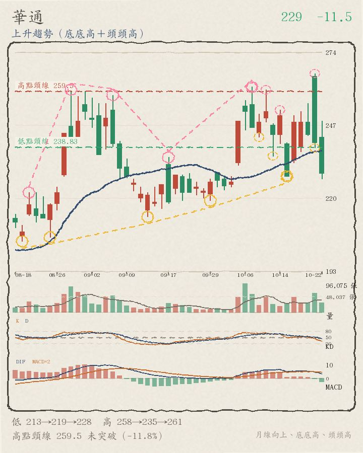
12:30 盤中 229（-4.78%），比加權指數弱 3.51 個百分點、跌破月線 237.1，離高點頸線 259.5 還差 11.8%，轉折結構仍是底底高＋頭頭高。
- 月線位置：現價 229 在月線 237.1 之下（-3.4%）；5 日線 241.6 也在月線之上（短均在上）；月線向上
- 量能：以已過交易時間推估，今天成交量約是 20 日均量的 1.41 倍（量增），比 20 日均量大不少；下跌卻量增，量價背離
- 關鍵價位：高點頸線 259.5 還沒突破，差 11.8%；前一交易日高點 266（低於 13.9%）；今天盤中高點 248.5（低於 7.8%）；今天盤中低點 227（高於 0.9%）
- 轉折結構：低點 213、219、228 一路墊高、高點 258、235、261 也一路墊高，是底底高＋頭頭高；還沒確認的轉折低點 10-15 228、10-21 238.5；還沒確認的轉折高點 10-14 252.5、10-21 266（圖上虛線小圈）
友達 2409 上市
36.2 -1.1（-2.82%）
上升趨勢（底底高＋頭頭高） 盤中成交值 72.99 億・全榜第 26 名（上市第 22 名）・相對大盤 -1.55
好條件 3/8：月線向上、底底高、頭頭高
不好條件 3/8：今日下跌、相對大盤弱、在月線之下
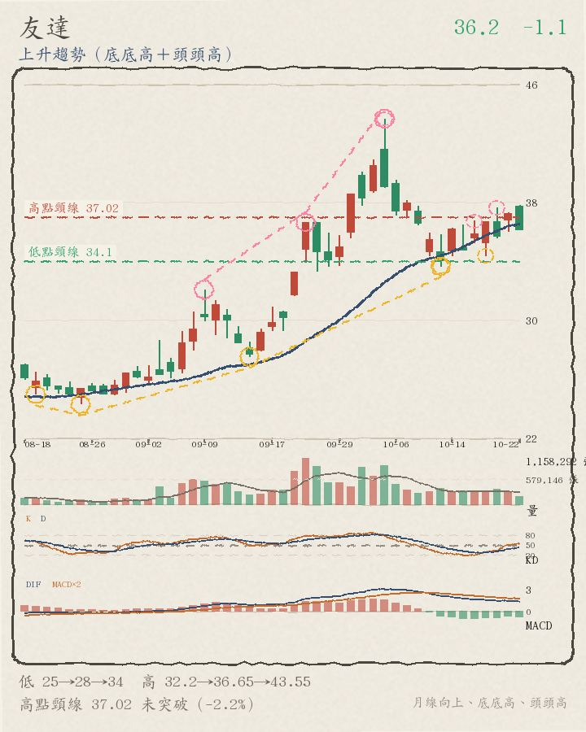
12:30 盤中 36.2（-2.82%），比加權指數弱 1.55 個百分點、跌破月線 36.438，離高點頸線 37.02 還差 2.2%，轉折結構仍是底底高＋頭頭高。
- 月線位置：現價 36.2 在月線 36.438 之下（-0.7%）；5 日線 36.1 也在月線之下（短均在下）；月線向上
- 量能：以已過交易時間推估，今天成交量約是 20 日均量的 0.48 倍（量縮），比 20 日均量少很多
- 關鍵價位：高點頸線 37.02 還沒突破，差 2.2%；前一交易日高點 37.3（低於 2.9%）；今天盤中高點 37.8（低於 4.2%）；今天盤中低點 36.2（高於 0.0%）
- 轉折結構：低點 24.6、27.75、33.75 一路墊高、高點 32.2、36.65、43.55 也一路墊高，是底底高＋頭頭高；還沒確認的轉折低點 10-13 33.75、10-19 34.45；還沒確認的轉折高點 10-16 36.75、10-20 37.65（圖上虛線小圈）
南電 8046 上市
1295 -45.0（-3.36%）
底部墊高、未過前高 盤中成交值 72.86 億・全榜第 27 名（上市第 23 名）・相對大盤 -2.09
好條件 2/8：月線向上、底底高
不好條件 5/8：今日下跌、相對大盤弱、在月線之下、貼近今日低點（1% 內）、跌破昨日低點
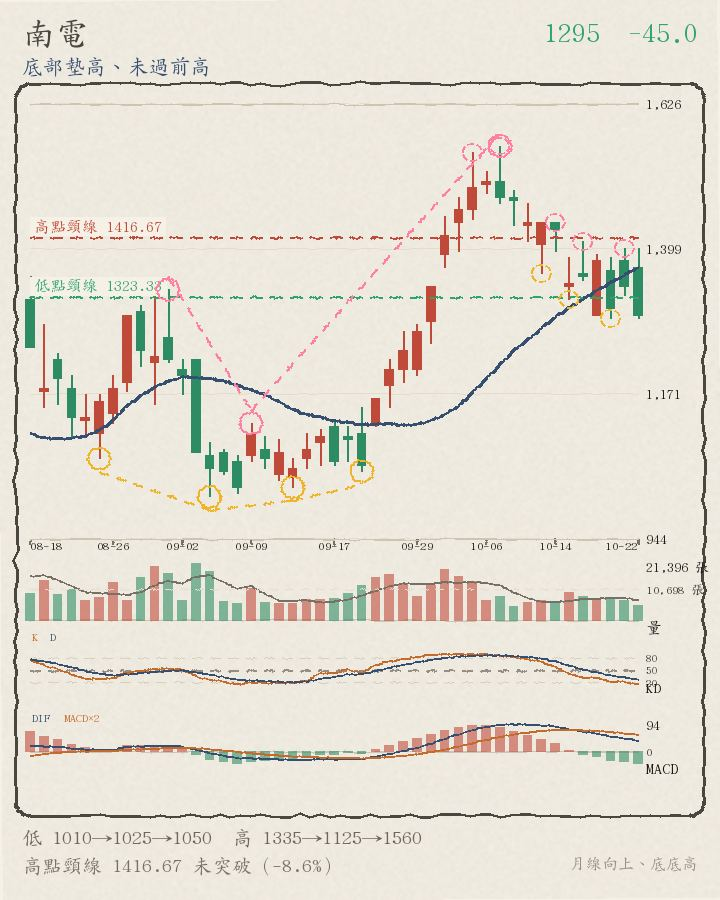
12:30 盤中 1295（-3.36%），比加權指數弱 2.09 個百分點、跌破月線 1357.75，離高點頸線 1416.67 還差 8.6%，底部還在墊高（但高點沒同步創高）。
- 月線位置：現價 1295 在月線 1357.75 之下（-4.6%）；5 日線 1345 也在月線之下（短均在下）；月線向上
- 量能：以已過交易時間推估，今天成交量約是 20 日均量的 0.66 倍（量縮），比 20 日均量少很多
- 關鍵價位：高點頸線 1416.67 還沒突破，差 8.6%；前一交易日高點 1400（低於 7.5%）；今天盤中高點 1400（低於 7.5%）；今天盤中低點 1290（高於 0.4%）
- 轉折結構：低點 1010、1025、1050 墊高（底底高），但高點 1335、1125、1560 沒有同步創高；還沒確認的轉折低點 10-15 1320、10-20 1290；還沒確認的轉折高點 10-16 1410、10-21 1400（圖上虛線小圈）
台虹 8039 上市
270 -23.0（-7.85%）
區間或轉弱 盤中成交值 71.95 億・全榜第 28 名（上市第 24 名）・相對大盤 -6.58
好條件 1/8：月線向上
不好條件 5/8：今日下跌、相對大盤弱、在月線之下、貼近今日低點（1% 內）、跌破昨日低點
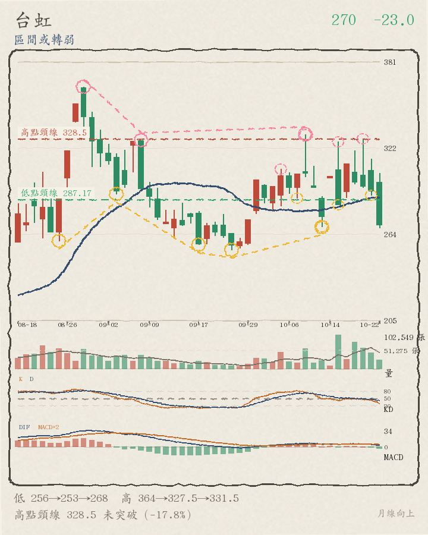
12:30 盤中 270（-7.85%），比加權指數弱 6.58 個百分點、跌破月線 288.35，離高點頸線 328.5 還差 17.8%，轉折還沒走出明顯方向。
- 月線位置：現價 270 在月線 288.35 之下（-6.4%）；5 日線 296.6 也在月線之上（短均在上）；月線向上
- 量能：以已過交易時間推估，今天成交量約是 20 日均量的 1.11 倍（量增），比 20 日均量大一些；下跌卻量增，量價背離
- 關鍵價位：高點頸線 328.5 還沒突破，差 17.8%；前一交易日高點 315（低於 14.3%）；今天盤中高點 305（低於 11.5%）；今天盤中低點 268（高於 0.7%）
- 轉折結構：低點 256.5、253、268.5 與高點 364、327.5、331.5 都沒有明顯遞增，屬於區間震盪或轉弱；還沒確認的轉折低點 10-15 283.5、10-21 290；還沒確認的轉折高點 10-15 326.5、10-20 328.5（圖上虛線小圈）
高力 8996 上市
1575 -85.0（-5.12%）
上升趨勢（底底高＋頭頭高） 盤中成交值 71.47 億・全榜第 29 名（上市第 25 名）・相對大盤 -3.85
好條件 3/8：月線向上、底底高、頭頭高
不好條件 5/8：今日下跌、相對大盤弱、在月線之下、量增下跌（出貨）、跌破昨日低點
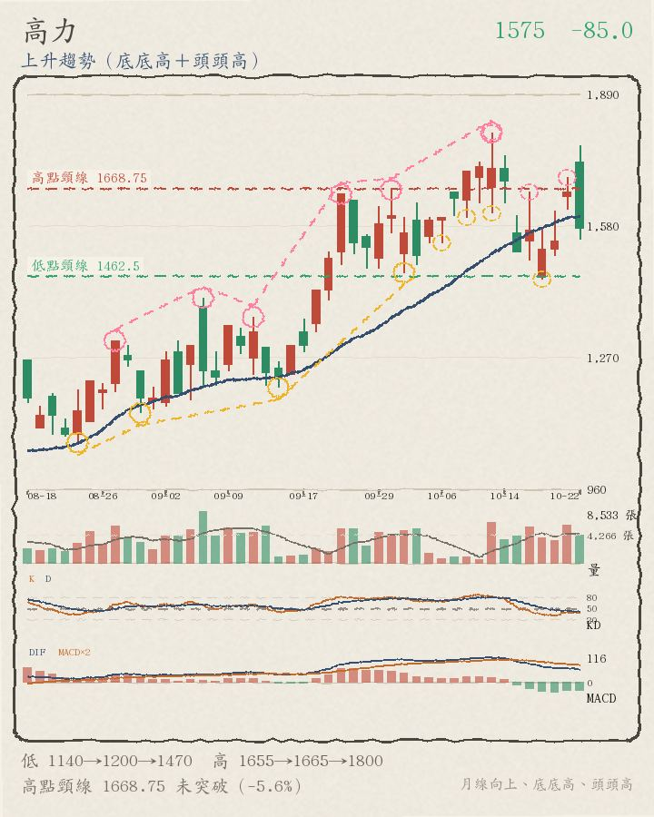
12:30 盤中 1575（-5.12%），比加權指數弱 3.85 個百分點、跌破月線 1599.25，離高點頸線 1668.75 還差 5.6%，轉折結構仍是底底高＋頭頭高。
- 月線位置：現價 1575 在月線 1599.25 之下（-1.5%）；5 日線 1564 也在月線之下（短均在下）；月線向上
- 量能：以已過交易時間推估，今天成交量約是 20 日均量的 1.61 倍（爆量），比 20 日均量大不少；下跌卻量增，量價背離
- 關鍵價位：高點頸線 1668.75 還沒突破，差 5.6%；前一交易日高點 1695（低於 7.1%）；今天盤中高點 1770（低於 11.0%）；今天盤中低點 1550（高於 1.6%）
- 轉折結構：低點 1140、1200、1470 一路墊高、高點 1655、1665、1800 也一路墊高，是底底高＋頭頭高；還沒確認的轉折低點 10-13 1610、10-19 1455；還沒確認的轉折高點 10-16 1660、10-21 1695（圖上虛線小圈）
健策 3653 上市
6020 -515.0（-7.88%）
區間或轉弱 盤中成交值 70.86 億・全榜第 30 名（上市第 26 名）・相對大盤 -6.61
好條件 1/8：月線向上
不好條件 7/8：跌破前低、今日下跌、相對大盤弱、在月線之下、量增下跌（出貨）、貼近今日低點（1% 內）、跌破昨日低點
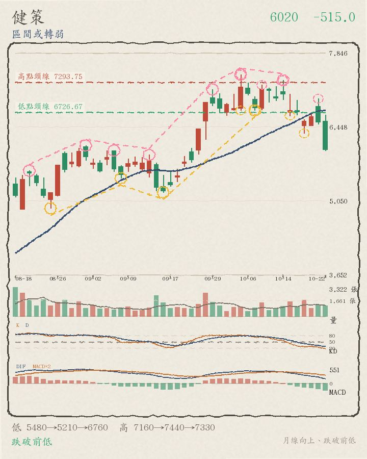
12:30 盤中 6020（-7.88%），比加權指數弱 6.61 個百分點、跌破月線 6751.75，離高點頸線 7293.75 還差 17.5%，轉折還沒走出明顯方向。
- 月線位置：現價 6020 在月線 6751.75 之下（-10.8%）；5 日線 6648 也在月線之下（短均在下）；月線向上
- 量能：以已過交易時間推估，今天成交量約是 20 日均量的 1.28 倍（量增），比 20 日均量大不少；下跌卻量增，量價背離
- 關鍵價位：已跌破前一個轉折低點；高點頸線 7293.75 還在現價上方 17.5%；前一交易日高點 6985（低於 13.8%）；今天盤中高點 6675（低於 9.8%）；今天盤中低點 5995（高於 0.4%）
- 轉折結構：低點 5480、5210、6760 與高點 7160、7440、7330 都沒有明顯遞增，屬於區間震盪或轉弱；還沒確認的轉折低點 10-15 6660、10-19 6330；還沒確認的轉折高點 10-14 7330、10-21 6985（圖上虛線小圈）
京元電子 2449 上市
266 -12.0（-4.32%）
區間或轉弱 盤中成交值 67.08 億・全榜第 31 名（上市第 27 名）・相對大盤 -3.05
好條件 1/8：月線向上
不好條件 5/8：跌破前低、今日下跌、相對大盤弱、在月線之下、貼近今日低點（1% 內）

12:30 盤中 266（-4.32%），比加權指數弱 3.05 個百分點、跌破月線 292.975，離高點頸線 281.25 還差 5.4%，轉折還沒走出明顯方向。
- 月線位置：現價 266 在月線 292.975 之下（-9.2%）；5 日線 269.6 也在月線之下（短均在下）；月線向上
- 量能：以已過交易時間推估，今天成交量約是 20 日均量的 0.97 倍（量平），跟 20 日均量差不多
- 關鍵價位：已跌破前一個轉折低點；高點頸線 281.25 還在現價上方 5.4%；前一交易日高點 279（低於 4.7%）；今天盤中高點 284.5（低於 6.5%）；今天盤中低點 265（高於 0.4%）
- 轉折結構：低點 259、253、284 與高點 283.5、330、310 都沒有明顯遞增，屬於區間震盪或轉弱；還沒確認的轉折低點 10-15 268、10-19 255；還沒確認的轉折高點 10-13 307、10-21 279（圖上虛線小圈）
緯穎 6669 上市
1840 -40.0（-2.13%）
區間或轉弱 盤中成交值 63.87 億・全榜第 32 名（上市第 28 名）・相對大盤 -0.86
好條件 0/8：無
不好條件 6/8：跌破前低、今日下跌、相對大盤弱、在月線之下、跌破昨日低點、月線下彎
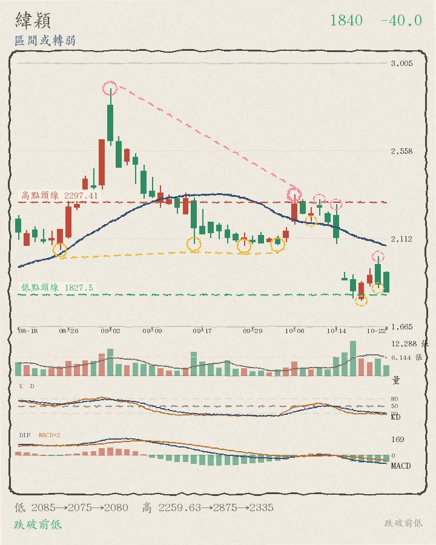
12:30 盤中 1840（-2.13%），比加權指數弱 0.86 個百分點、跌破月線 2090.75，離高點頸線 2297.41 還差 19.9%，轉折還沒走出明顯方向。
- 月線位置：現價 1840 在月線 2090.75 之下（-12.0%）；5 日線 1888 也在月線之下（短均在下）；月線向下
- 量能：以已過交易時間推估，今天成交量約是 20 日均量的 1.15 倍（量增），比 20 日均量大不少；下跌卻量增，量價背離
- 關鍵價位：已跌破前一個轉折低點；高點頸線 2297.41 還在現價上方 19.9%；前一交易日高點 2020（低於 8.9%）；今天盤中高點 1945（低於 5.4%）；今天盤中低點 1840（高於 0.0%）
- 轉折結構：低點 2085、2075、2080 與高點 2259.63、2875、2335 都沒有明顯遞增，屬於區間震盪或轉弱；還沒確認的轉折低點 10-19 1795、10-21 1860；還沒確認的轉折高點 10-14 2285、10-21 2020（圖上虛線小圈）
GIS-KY 6456 上市
103.5 +5.1（+5.18%）
高點墊高、底部不穩 盤中成交值 63.17 億・全榜第 33 名（上市第 29 名）・相對大盤 +6.45
好條件 6/8：站上月線、月線向上、頭頭高、突破頸線、相對大盤強、攻擊量（量增＋上漲）
不好條件 0/8：無

12:30 盤中 103.5（+5.18%），比加權指數強 6.45 個百分點、站上月線 89.975，已突破高點頸線 97.05，高點還在墊高（但底部沒同步墊高）。
- 月線位置：現價 103.5 在月線 89.975 之上（+15.0%）；5 日線 89.82 也在月線之下（短均在下）；月線向上
- 量能：以已過交易時間推估，今天成交量約是 20 日均量的 3.31 倍（爆量），比 20 日均量大不少；上漲又量增，量價配合
- 關鍵價位：高點頸線 97.05 已站上；前一交易日高點 98.4（高於 5.2%）；今天盤中高點 108（低於 4.2%）；今天盤中低點 99.8（高於 3.7%）
- 轉折結構：高點 77.5、95.7、108 墊高（頭頭高），但低點 63.6、62.9、61.4 沒有同步墊高；還沒確認的轉折低點 10-15 87.1、10-19 83.3；還沒確認的轉折高點 10-07 108、10-21 98.4（圖上虛線小圈）
騰輝電子-KY 6672 上市
583 -44.0（-7.02%）
上升趨勢（底底高＋頭頭高） 盤中成交值 62.98 億・全榜第 34 名（上市第 30 名）・相對大盤 -5.75
好條件 4/8：站上月線、月線向上、底底高、頭頭高
不好條件 5/8：今日下跌、相對大盤弱、量增下跌（出貨）、貼近今日低點（1% 內）、跌破昨日低點
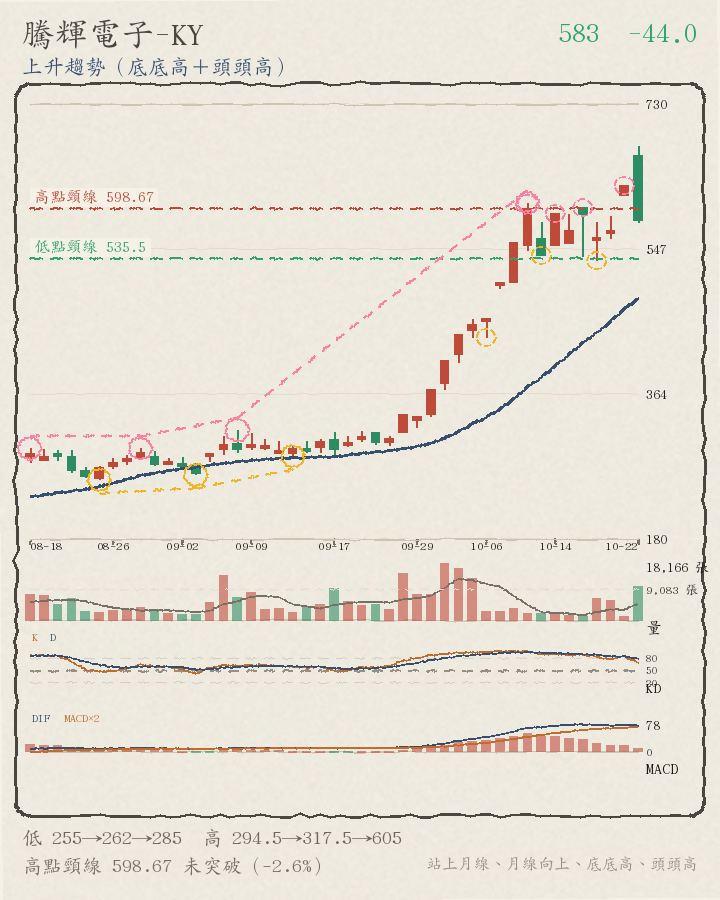
12:30 盤中 583（-7.02%），比加權指數弱 5.75 個百分點、站上月線 471.25，離高點頸線 598.67 還差 2.6%，轉折結構仍是底底高＋頭頭高。
- 月線位置：現價 583 在月線 471.25 之上（+23.7%）；5 日線 584 也在月線之上（短均在上）；月線向上
- 量能：以已過交易時間推估，今天成交量約是 20 日均量的 2.16 倍（爆量），比 20 日均量大不少；下跌卻量增，量價背離
- 關鍵價位：高點頸線 598.67 還沒突破，差 2.6%；前一交易日高點 627（低於 7.0%）；今天盤中高點 677（低於 13.9%）；今天盤中低點 581（高於 0.3%）
- 轉折結構：低點 255、261.5、285 一路墊高、高點 294.5、317.5、605 也一路墊高，是底底高＋頭頭高；還沒確認的轉折低點 10-13 539、10-19 532；還沒確認的轉折高點 10-16 599、10-21 627（圖上虛線小圈）
台表科 6278 上市
292 -24.5（-7.74%）
上升趨勢（底底高＋頭頭高） 盤中成交值 60.52 億・全榜第 35 名（上市第 31 名）・相對大盤 -6.47
好條件 4/8：站上月線、月線向上、底底高、頭頭高
不好條件 4/8：今日下跌、相對大盤弱、量增下跌（出貨）、跌破昨日低點
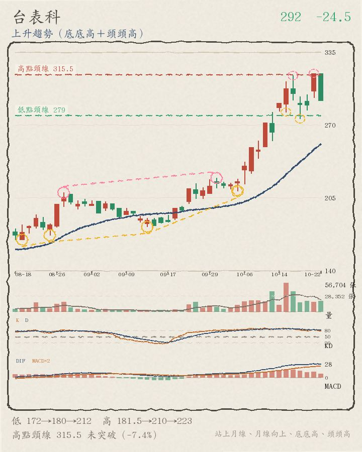
12:30 盤中 292（-7.74%），比加權指數弱 6.47 個百分點、站上月線 248.55，離高點頸線 315.5 還差 7.4%，轉折結構仍是底底高＋頭頭高。
- 月線位置：現價 292 在月線 248.55 之上（+17.5%）；5 日線 299.1 也在月線之上（短均在上）；月線向上
- 量能：以已過交易時間推估，今天成交量約是 20 日均量的 1.50 倍（爆量），比 20 日均量大不少；下跌卻量增，量價背離
- 關鍵價位：高點頸線 315.5 還沒突破，差 7.4%；前一交易日高點 316.5（低於 7.7%）；今天盤中高點 316.5（低於 7.7%）；今天盤中低點 292（高於 0.0%）
- 轉折結構：低點 172、179.5、211.5 一路墊高、高點 181.5、210、223 也一路墊高，是底底高＋頭頭高；還沒確認的轉折低點 10-15 282、10-19 276；還沒確認的轉折高點 10-16 314.5、10-21 316.5（圖上虛線小圈）
力積電 6770 上市
66.8 +0.6（+0.91%）
區間或轉弱 盤中成交值 60.4 億・全榜第 36 名（上市第 32 名）・相對大盤 +2.18
好條件 1/8：相對大盤強
不好條件 4/8：跌破前低、在月線之下、貼近今日低點（1% 內）、月線下彎
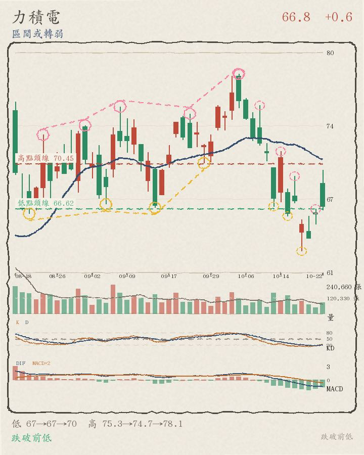
12:30 盤中 66.8（+0.91%），比加權指數強 2.18 個百分點、跌破月線 71.105，離高點頸線 70.45 還差 5.2%，轉折還沒走出明顯方向。
- 月線位置：現價 66.8 在月線 71.105 之下（-6.0%）；5 日線 65.82 也在月線之下（短均在下）；月線向下
- 量能：以已過交易時間推估，今天成交量約是 20 日均量的 1.07 倍（量平），比 20 日均量大一些
- 關鍵價位：已跌破前一個轉折低點；高點頸線 70.45 還在現價上方 5.2%；前一交易日高點 66.6（高於 0.3%）；今天盤中高點 69.9（低於 4.4%）；今天盤中低點 66.5（高於 0.5%）
- 轉折結構：低點 67、66.7、70.5 與高點 75.3、74.7、78.1 都沒有明顯遞增，屬於區間震盪或轉弱；還沒確認的轉折低點 10-15 66、10-19 63；還沒確認的轉折高點 10-16 69.4、10-21 66.6（圖上虛線小圈）
金居 8358 上櫃
446 -36.0（-7.47%）
底部墊高、未過前高 盤中成交值 58.31 億・全榜第 37 名（上櫃第 5 名）・相對大盤 -6.20
好條件 1/8：底底高
不好條件 7/8：跌破前低、今日下跌、相對大盤弱、在月線之下、量增下跌（出貨）、跌破昨日低點、月線下彎
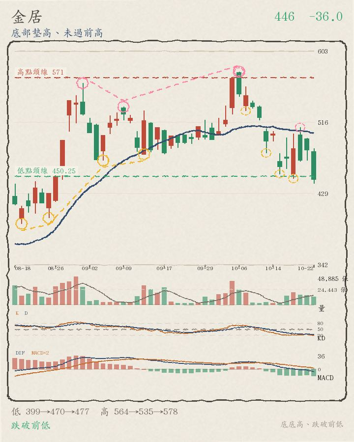
12:30 盤中 446（-7.47%），比加權指數弱 6.20 個百分點、跌破月線 504.95，離高點頸線 571 還差 21.9%，底部還在墊高（但高點沒同步創高）。
- 月線位置：現價 446 在月線 504.95 之下（-11.7%）；5 日線 473.8 也在月線之下（短均在下）；月線向下
- 量能：以已過交易時間推估，今天成交量約是 20 日均量的 1.49 倍（量增），比 20 日均量大不少；下跌卻量增，量價背離
- 關鍵價位：已跌破前一個轉折低點；高點頸線 571 還在現價上方 21.9%；前一交易日高點 496.5（低於 10.2%）；今天盤中高點 484（低於 7.9%）；今天盤中低點 441.5（高於 1.0%）
- 轉折結構：低點 399、469.5、477 墊高（底底高），但高點 564、535、578 沒有同步創高；還沒確認的轉折低點 10-15 453、10-19 447.5；還沒確認的轉折高點 10-06 578、10-20 510（圖上虛線小圈）
信昌電 6173 上櫃
295 +10.5（+3.69%）
區間或轉弱 盤中成交值 57.5 億・全榜第 38 名（上櫃第 6 名）・相對大盤 +4.96
好條件 2/8：相對大盤強、攻擊量（量增＋上漲）
不好條件 3/8：跌破前低、在月線之下、月線下彎
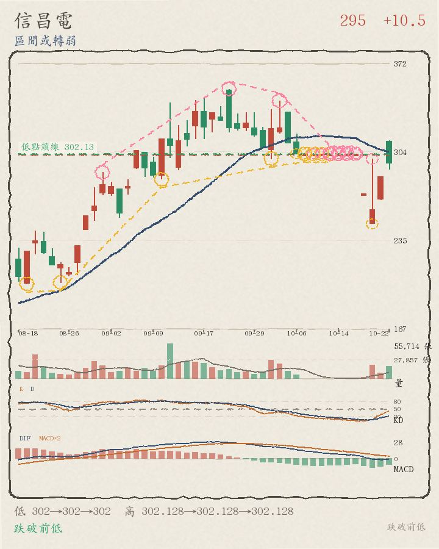
12:30 盤中 295（+3.69%），比加權指數強 4.96 個百分點、跌破月線 305.404，離高點頸線 301.44 還差 2.1%，轉折還沒走出明顯方向。
- 月線位置：現價 295 在月線 305.404 之下（-3.4%）；5 日線 283.851 也在月線之下（短均在下）；月線向下
- 量能：以已過交易時間推估，今天成交量約是 20 日均量的 1.90 倍（爆量），比 20 日均量大不少；上漲又量增，量價配合
- 關鍵價位：已跌破前一個轉折低點；高點頸線 301.44 還在現價上方 2.1%；前一交易日高點 284.5（高於 3.7%）；今天盤中高點 312.5（低於 5.6%）；今天盤中低點 290（高於 1.7%）
- 轉折結構：低點 302.128、302.128、302.128 與高點 302.128、302.128、302.128 都沒有明顯遞增，屬於區間震盪或轉弱；還沒確認的轉折低點 10-15 302.128、10-20 248；還沒確認的轉折高點 10-16 302.128、10-20 298（圖上虛線小圈）
環球晶 6488 上櫃
837 -43.0（-4.89%）
區間或轉弱 盤中成交值 57.38 億・全榜第 39 名（上櫃第 7 名）・相對大盤 -3.62
好條件 0/8：無
不好條件 7/8：跌破前低、今日下跌、相對大盤弱、在月線之下、貼近今日低點（1% 內）、跌破昨日低點、月線下彎
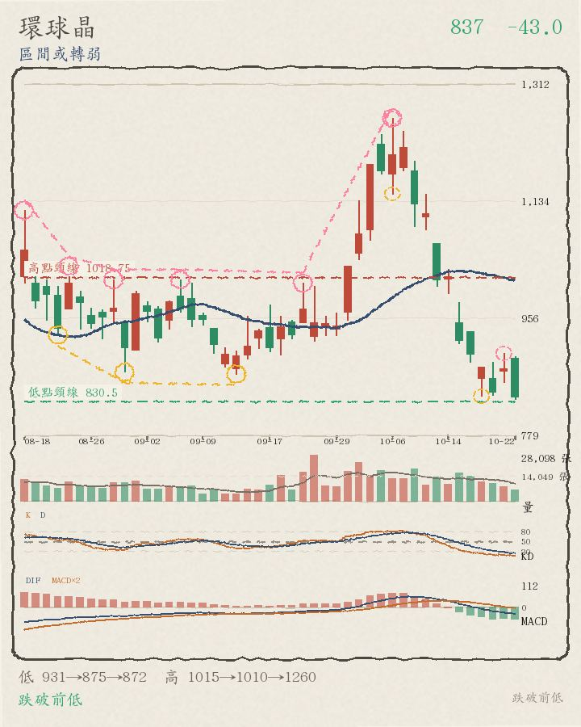
12:30 盤中 837（-4.89%），比加權指數弱 3.62 個百分點、跌破月線 1018.3，離高點頸線 1018.75 還差 17.8%，轉折還沒走出明顯方向。
- 月線位置：現價 837 在月線 1018.3 之下（-17.8%）；5 日線 886.2 也在月線之下（短均在下）；月線向下
- 量能：以已過交易時間推估，今天成交量約是 20 日均量的 0.59 倍（量縮），比 20 日均量少很多
- 關鍵價位：已跌破前一個轉折低點；高點頸線 1018.75 還在現價上方 17.8%；前一交易日高點 903（低於 7.3%）；今天盤中高點 898（低於 6.8%）；今天盤中低點 833（高於 0.5%）
- 轉折結構：低點 931、875、872 與高點 1015、1010、1260 都沒有明顯遞增，屬於區間震盪或轉弱；還沒確認的轉折低點 10-06 1145、10-19 838；還沒確認的轉折高點 10-06 1260、10-21 903（圖上虛線小圈）
聯亞 3081 上櫃
2430 -195.0（-7.43%）
高點墊高、底部不穩 盤中成交值 56.3 億・全榜第 40 名（上櫃第 8 名）・相對大盤 -6.16
好條件 1/8：頭頭高
不好條件 7/8：跌破前低、今日下跌、相對大盤弱、在月線之下、貼近今日低點（1% 內）、跌破昨日低點、月線下彎
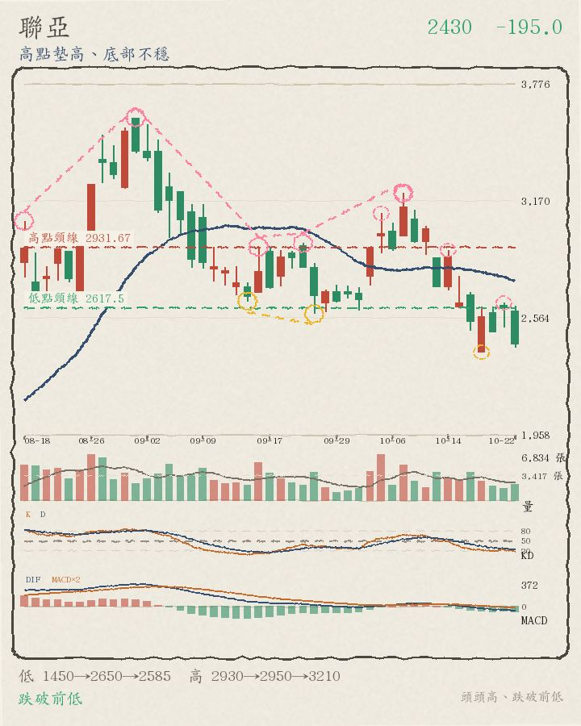
12:30 盤中 2430（-7.43%），比加權指數弱 6.16 個百分點、跌破月線 2776.5，離高點頸線 2931.67 還差 17.1%，高點還在墊高（但底部沒同步墊高）。
- 月線位置：現價 2430 在月線 2776.5 之下（-12.5%）；5 日線 2574 也在月線之下（短均在下）；月線向下
- 量能：以已過交易時間推估，今天成交量約是 20 日均量的 0.98 倍（量平），跟 20 日均量差不多
- 關鍵價位：已跌破前一個轉折低點；高點頸線 2931.67 還在現價上方 17.1%；前一交易日高點 2640（低於 8.0%）；今天盤中高點 2625（低於 7.4%）；今天盤中低點 2410（高於 0.8%）
- 轉折結構：高點 2930、2950、3210 墊高（頭頭高），但低點 1450、2650、2585 沒有同步墊高；還沒確認的轉折低點 10-19 2385；還沒確認的轉折高點 10-14 2915、10-21 2640（圖上虛線小圈）
台郡 6269 上市
79.8 -6.8（-7.85%）
高點墊高、底部不穩 盤中成交值 55.89 億・全榜第 41 名（上市第 33 名）・相對大盤 -6.58
好條件 3/8：站上月線、月線向上、頭頭高
不好條件 5/8：今日下跌、相對大盤弱、量增下跌（出貨）、貼近今日低點（1% 內）、跌破昨日低點
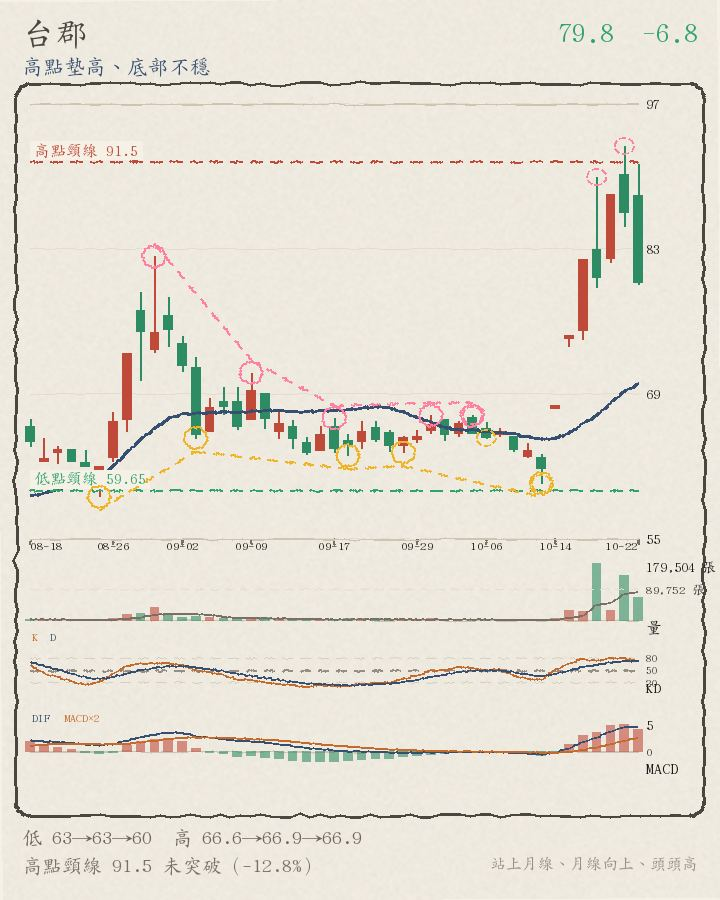
12:30 盤中 79.8（-7.85%），比加權指數弱 6.58 個百分點、站上月線 69.225，離高點頸線 91.5 還差 12.8%，高點還在墊高（但底部沒同步墊高）。
- 月線位置：現價 79.8 在月線 69.225 之上（+15.3%）；5 日線 82.36 也在月線之上（短均在上）；月線向上
- 量能：以已過交易時間推估，今天成交量約是 20 日均量的 5.77 倍（爆量），比 20 日均量大不少；下跌卻量增，量價背離
- 關鍵價位：高點頸線 91.5 還沒突破，差 12.8%；前一交易日高點 93（低於 14.2%）；今天盤中高點 91.2（低於 12.5%）；今天盤中低點 79.6（高於 0.3%）
- 轉折結構：高點 66.6、66.9、66.9 墊高（頭頭高），但低點 63、63.3、60.3 沒有同步墊高；還沒確認的轉折低點 10-06 64.7、10-13 60.3；還沒確認的轉折高點 10-19 90、10-21 93（圖上虛線小圈）
奇鋐 3017 上市
3200 -35.0（-1.08%）
區間或轉弱 盤中成交值 55.87 億・全榜第 42 名（上市第 34 名）・相對大盤 +0.19
好條件 2/8：月線向上、相對大盤強
不好條件 3/8：今日下跌、在月線之下、貼近今日低點（1% 內）
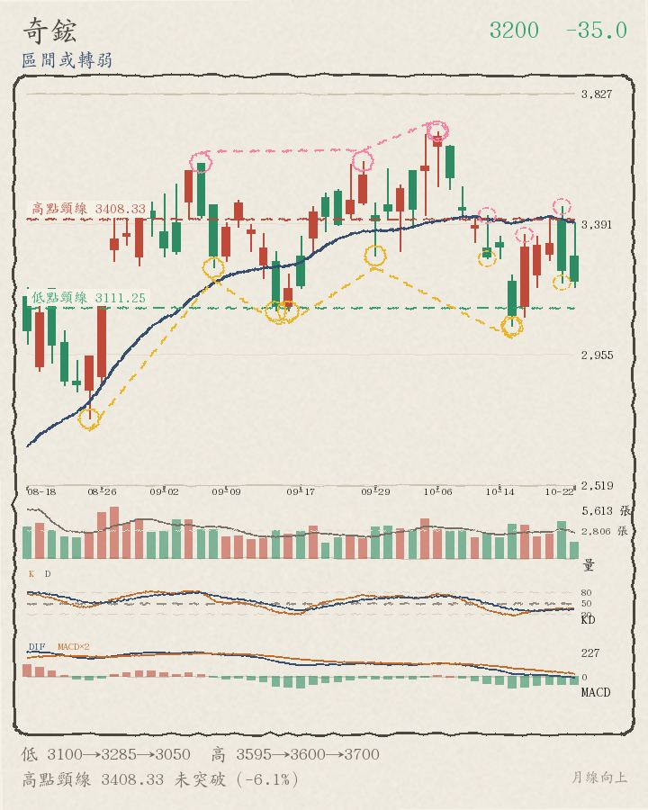
12:30 盤中 3200（-1.08%），比加權指數強 0.19 個百分點、跌破月線 3406.5，離高點頸線 3408.33 還差 6.1%，轉折還沒走出明顯方向。
- 月線位置：現價 3200 在月線 3406.5 之下（-6.1%）；5 日線 3256 也在月線之下（短均在下）；月線向上
- 量能：以已過交易時間推估，今天成交量約是 20 日均量的 0.78 倍（量平），比 20 日均量少很多
- 關鍵價位：高點頸線 3408.33 還沒突破，差 6.1%；前一交易日高點 3450（低於 7.2%）；今天盤中高點 3395（低於 5.7%）；今天盤中低點 3180（高於 0.6%）
- 轉折結構：低點 3100、3285、3050 與高點 3595、3600、3700 都沒有明顯遞增，屬於區間震盪或轉弱；還沒確認的轉折低點 10-15 3050、10-21 3195；還沒確認的轉折高點 10-16 3355、10-21 3450（圖上虛線小圈）
緯創 3231 上市
191 -4.0（-2.05%）
高點墊高、底部不穩 盤中成交值 53.59 億・全榜第 43 名（上市第 35 名）・相對大盤 -0.78
好條件 3/8：站上月線、月線向上、頭頭高
不好條件 4/8：今日下跌、相對大盤弱、貼近今日低點（1% 內）、跌破昨日低點
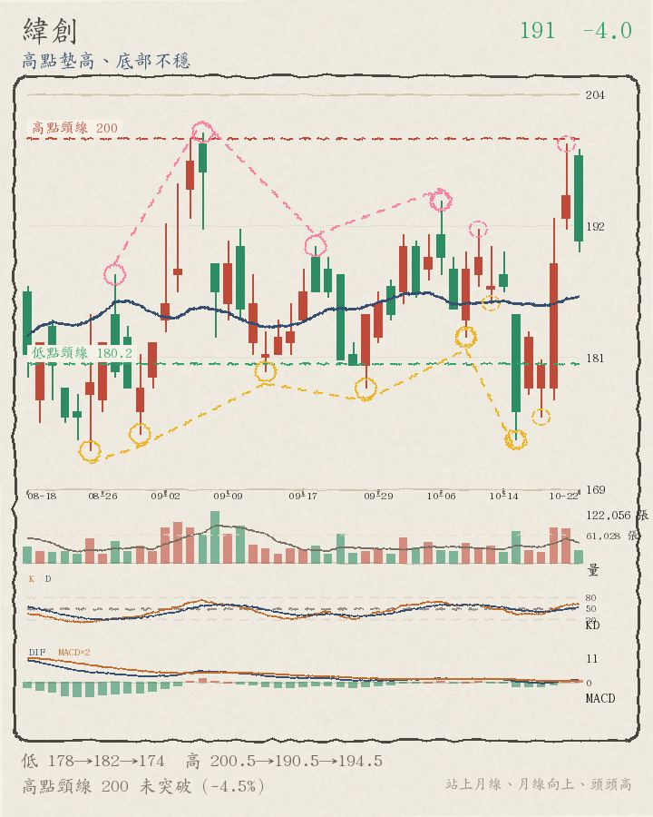
12:30 盤中 191（-2.05%），比加權指數弱 0.78 個百分點、站上月線 185.85，離高點頸線 200 還差 4.5%，高點還在墊高（但底部沒同步墊高）。
- 月線位置：現價 191 在月線 185.85 之上（+2.8%）；5 日線 184.5 也在月線之下（短均在下）；月線向上
- 量能：以已過交易時間推估，今天成交量約是 20 日均量的 0.93 倍（量平），比 20 日均量少一些
- 關鍵價位：高點頸線 200 還沒突破，差 4.5%；前一交易日高點 199.5（低於 4.3%）；今天盤中高點 199（低於 4.0%）；今天盤中低點 190（高於 0.5%）
- 轉折結構：高點 200.5、190.5、194.5 墊高（頭頭高），但低點 178、182.5、173.5 沒有同步墊高；還沒確認的轉折低點 10-15 173.5、10-19 175.5；還沒確認的轉折高點 10-12 192、10-21 199.5（圖上虛線小圈）
雙鴻 3324 上櫃
1350 -25.0（-1.82%）
高點墊高、底部不穩 盤中成交值 52.38 億・全榜第 44 名（上櫃第 9 名）・相對大盤 -0.55
好條件 2/8：月線向上、頭頭高
不好條件 6/8：跌破前低、今日下跌、相對大盤弱、在月線之下、量增下跌（出貨）、貼近今日低點（1% 內）
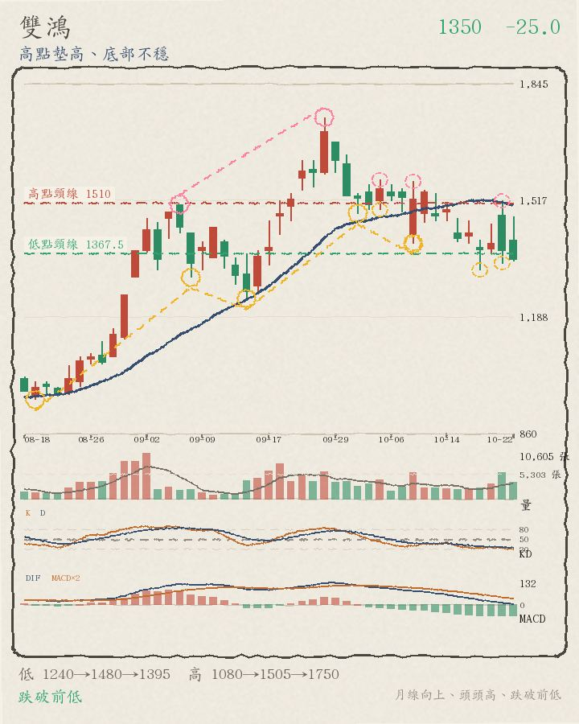
12:30 盤中 1350（-1.82%），比加權指數弱 0.55 個百分點、跌破月線 1511.5，離高點頸線 1510 還差 10.6%，高點還在墊高（但底部沒同步墊高）。
- 月線位置：現價 1350 在月線 1511.5 之下（-10.7%）；5 日線 1397 也在月線之下（短均在下）；月線向上
- 量能：以已過交易時間推估，今天成交量約是 20 日均量的 1.34 倍（量增），比 20 日均量大不少；下跌卻量增，量價背離
- 關鍵價位：已跌破前一個轉折低點；高點頸線 1510 還在現價上方 10.6%；前一交易日高點 1515（低於 10.9%）；今天盤中高點 1470（低於 8.2%）；今天盤中低點 1345（高於 0.4%）
- 轉折結構：高點 1080、1505、1750 墊高（頭頭高），但低點 1240、1480、1395 沒有同步墊高；還沒確認的轉折低點 10-19 1320、10-21 1340；還沒確認的轉折高點 10-08 1570、10-21 1515（圖上虛線小圈）
華邦電 2344 上市
156 -3.5（-2.19%）
底部墊高、未過前高 盤中成交值 50.85 億・全榜第 45 名（上市第 36 名）・相對大盤 -0.92
好條件 1/8：底底高
不好條件 6/8：跌破前低、今日下跌、相對大盤弱、在月線之下、貼近今日低點（1% 內）、月線下彎
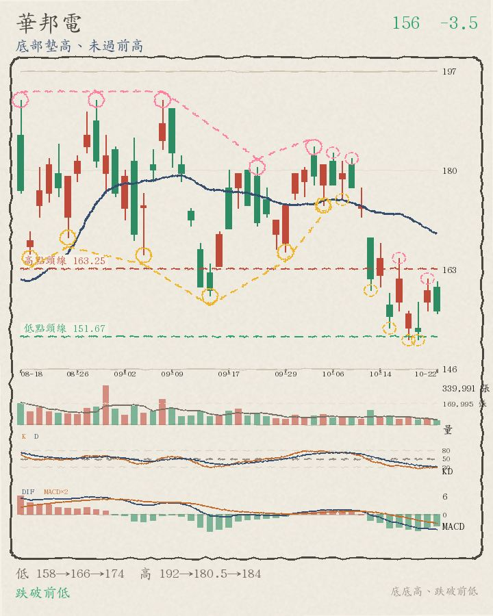
12:30 盤中 156（-2.19%），比加權指數弱 0.92 個百分點、跌破月線 170.05，離高點頸線 163.25 還差 4.4%，底部還在墊高（但高點沒同步創高）。
- 月線位置：現價 156 在月線 170.05 之下（-8.3%）；5 日線 156.8 也在月線之下（短均在下）；月線向下
- 量能：以已過交易時間推估，今天成交量約是 20 日均量的 0.59 倍（量縮），比 20 日均量少很多
- 關鍵價位：已跌破前一個轉折低點；高點頸線 163.25 還在現價上方 4.4%；前一交易日高點 161.5（低於 3.4%）；今天盤中高點 161（低於 3.1%）；今天盤中低點 155.5（高於 0.3%）
- 轉折結構：低點 158.5、166、174 墊高（底底高），但高點 192、180.5、184 沒有同步創高；還沒確認的轉折低點 10-19 151、10-20 151；還沒確認的轉折高點 10-16 165、10-21 161.5（圖上虛線小圈）
智邦 2345 上市
1785 -30.0（-1.65%）
區間或轉弱 盤中成交值 44.41 億・全榜第 46 名（上市第 37 名）・相對大盤 -0.38
好條件 1/8：月線向上
不好條件 6/8：跌破前低、今日下跌、相對大盤弱、在月線之下、貼近今日低點（1% 內）、跌破昨日低點
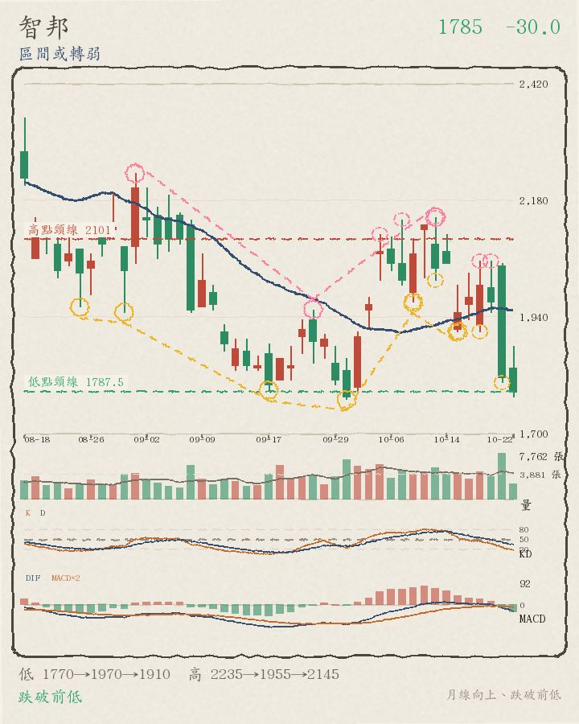
12:30 盤中 1785（-1.65%），比加權指數弱 0.38 個百分點、跌破月線 1957，離高點頸線 2101 還差 15.0%，轉折還沒走出明顯方向。
- 月線位置：現價 1785 在月線 1957 之下（-8.8%）；5 日線 1944 也在月線之下（短均在下）；月線向上
- 量能：以已過交易時間推估，今天成交量約是 20 日均量的 0.73 倍（量平），比 20 日均量少很多
- 關鍵價位：已跌破前一個轉折低點；高點頸線 2101 還在現價上方 15.0%；前一交易日高點 2050（低於 12.9%）；今天盤中高點 1880（低於 5.1%）；今天盤中低點 1775（高於 0.6%）
- 轉折結構：低點 1770、1970、1910 與高點 2235、1955、2145 都沒有明顯遞增，屬於區間震盪或轉弱；還沒確認的轉折低點 10-19 1910、10-21 1805；還沒確認的轉折高點 10-19 2055、10-20 2055（圖上虛線小圈）
欣銓 3264 上櫃
249 -16.0（-6.04%）
高點墊高、底部不穩 盤中成交值 43.19 億・全榜第 47 名（上櫃第 10 名）・相對大盤 -4.77
好條件 2/8：月線向上、頭頭高
不好條件 4/8：今日下跌、相對大盤弱、在月線之下、跌破昨日低點
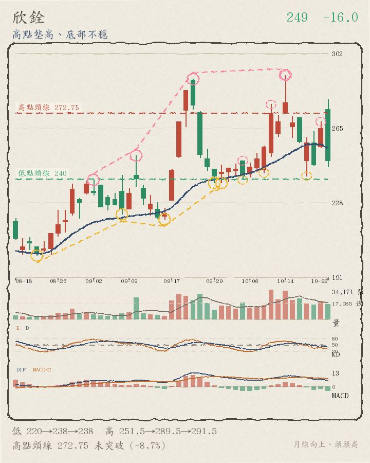
12:30 盤中 249（-6.04%），比加權指數弱 4.77 個百分點、跌破月線 257.15，離高點頸線 272.75 還差 8.7%，高點還在墊高（但底部沒同步墊高）。
- 月線位置：現價 249 在月線 257.15 之下（-3.2%）；5 日線 259.3 也在月線之上（短均在上）；月線向上
- 量能：以已過交易時間推估，今天成交量約是 20 日均量的 1.09 倍（量平），比 20 日均量大一些
- 關鍵價位：高點頸線 272.75 還沒突破，差 8.7%；前一交易日高點 268.5（低於 7.3%）；今天盤中高點 279.5（低於 10.9%）；今天盤中低點 246（高於 1.2%）
- 轉折結構：高點 251.5、289.5、291.5 墊高（頭頭高），但低點 220、238、238 沒有同步墊高；還沒確認的轉折低點 10-08 243、10-19 241.5；還沒確認的轉折高點 10-14 291.5、10-21 268.5（圖上虛線小圈）
鴻海 2317 上市
246 -4.0（-1.60%）
底部墊高、未過前高 盤中成交值 42.83 億・全榜第 48 名（上市第 38 名）・相對大盤 -0.33
好條件 1/8：底底高
不好條件 5/8：跌破前低、今日下跌、相對大盤弱、在月線之下、月線下彎
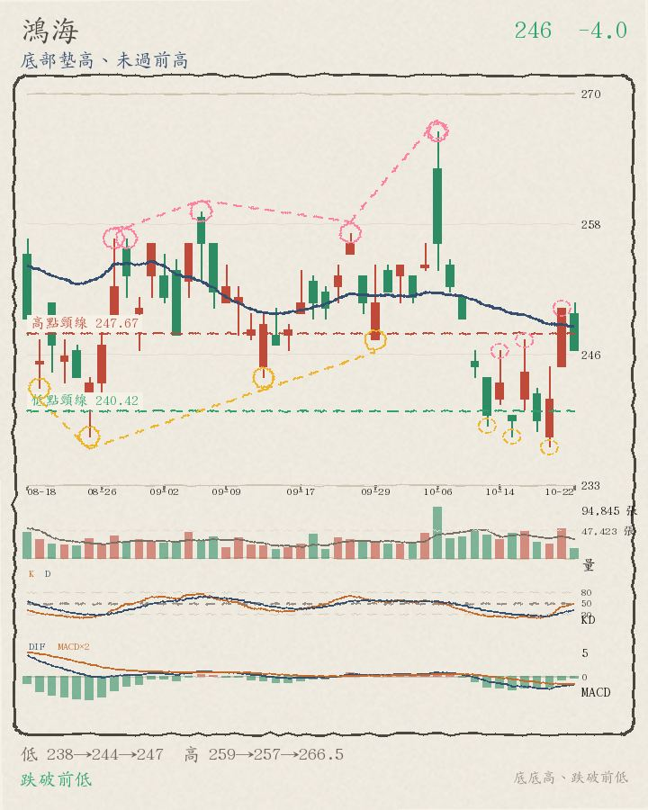
12:30 盤中 246（-1.60%），比加權指數弱 0.33 個百分點、跌破月線 248.475，離高點頸線 247.67 還差 0.7%，底部還在墊高（但高點沒同步創高）。
- 月線位置：現價 246 在月線 248.475 之下（-1.0%）；5 日線 242.9 也在月線之下（短均在下）；月線向下
- 量能：以已過交易時間推估，今天成交量約是 20 日均量的 0.58 倍（量縮），比 20 日均量少很多
- 關鍵價位：已跌破前一個轉折低點；高點頸線 247.67 還在現價上方 0.7%；前一交易日高點 250（低於 1.6%）；今天盤中高點 250.5（低於 1.8%）；今天盤中低點 246（高於 0.0%）
- 轉折結構：低點 238、243.5、247 墊高（底底高），但高點 259、257、266.5 沒有同步創高；還沒確認的轉折低點 10-15 238、10-20 237；還沒確認的轉折高點 10-16 247、10-21 250（圖上虛線小圈）
群創 3481 上市
48.4 -0.1（-0.21%）
高點墊高、底部不穩 盤中成交值 41.09 億・全榜第 49 名（上市第 39 名）・相對大盤 +1.06
好條件 2/8：頭頭高、相對大盤強
不好條件 5/8：跌破前低、今日下跌、在月線之下、貼近今日低點（1% 內）、月線下彎
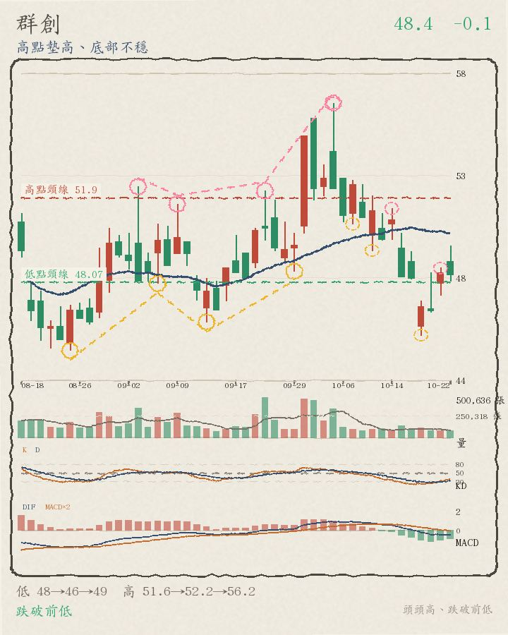
12:30 盤中 48.4（-0.21%），比加權指數強 1.06 個百分點、跌破月線 50.375，離高點頸線 51.9 還差 6.7%，高點還在墊高（但底部沒同步墊高）。
- 月線位置：現價 48.4 在月線 50.375 之下（-3.9%）；5 日線 47.76 也在月線之下（短均在下）；月線向下
- 量能：以已過交易時間推估，今天成交量約是 20 日均量的 0.56 倍（量縮），比 20 日均量少很多
- 關鍵價位：已跌破前一個轉折低點；高點頸線 51.9 還在現價上方 6.7%；前一交易日高點 48.7（低於 0.6%）；今天盤中高點 49.7（低於 2.6%）；今天盤中低點 48.1（高於 0.6%）
- 轉折結構：高點 51.6、52.2、56.2 墊高（頭頭高），但低點 48、46.25、48.55 沒有同步墊高；還沒確認的轉折低點 10-12 49.5、10-19 45.65；還沒確認的轉折高點 10-14 51.4、10-21 48.7（圖上虛線小圈）
鴻勁 7769 上市
5280 +150.0（+2.92%）
區間或轉弱 盤中成交值 35.9 億・全榜第 50 名（上市第 40 名）・相對大盤 +4.19
好條件 1/8：相對大盤強
不好條件 3/8：跌破前低、在月線之下、月線下彎

12:30 盤中 5280（+2.92%），比加權指數強 4.19 個百分點、跌破月線 5703.75，離高點頸線 6556.67 還差 19.5%，轉折還沒走出明顯方向。
- 月線位置：現價 5280 在月線 5703.75 之下（-7.4%）；5 日線 5249 也在月線之下（短均在下）；月線向下
- 量能：以已過交易時間推估，今天成交量約是 20 日均量的 0.96 倍（量平），跟 20 日均量差不多
- 關鍵價位：已跌破前一個轉折低點；高點頸線 6556.67 還在現價上方 19.5%；前一交易日高點 5400（低於 2.2%）；今天盤中高點 5480（低於 3.6%）；今天盤中低點 5220（高於 1.1%）
- 轉折結構：低點 6060、5620、5380 與高點 7160、6615、6515 都沒有明顯遞增，屬於區間震盪或轉弱；還沒確認的轉折低點 10-19 5035、10-21 5105；還沒確認的轉折高點 10-12 6515、10-20 5540（圖上虛線小圈）
今國光 6209 上市
99 -11.0（-10.00%）
上升趨勢（底底高＋頭頭高） 盤中成交值 33.89 億・全榜第 51 名（上市第 41 名）・相對大盤 -8.73
好條件 4/8：站上月線、月線向上、底底高、頭頭高
不好條件 4/8：今日下跌、相對大盤弱、量增下跌（出貨）、跌破昨日低點
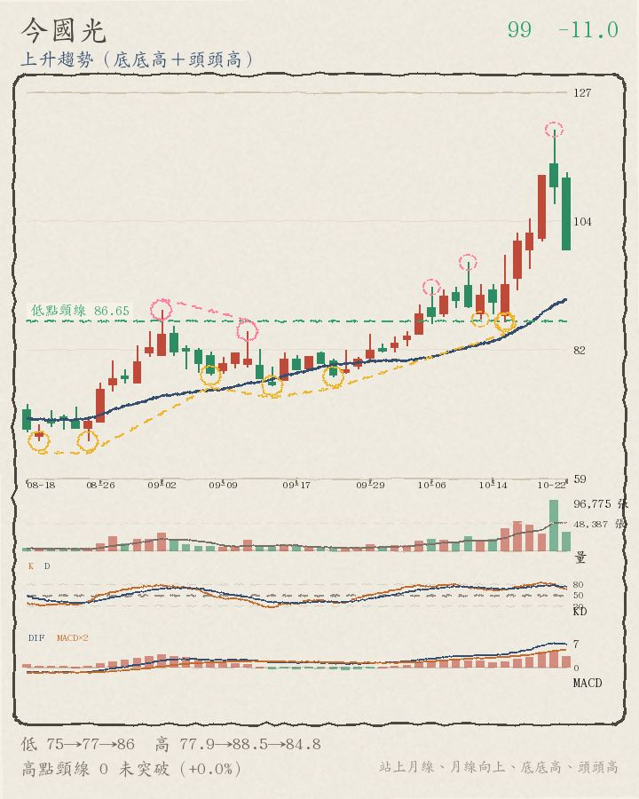
12:30 盤中 99（-10.00%），比加權指數弱 8.73 個百分點、站上月線 89.38，轉折結構仍是底底高＋頭頭高。
- 月線位置：現價 99 在月線 89.38 之上（+10.8%）；5 日線 103.5 也在月線之上（短均在上）；月線向上
- 量能：以已過交易時間推估，今天成交量約是 20 日均量的 2.33 倍（爆量），比 20 日均量大不少；下跌卻量增，量價背離
- 關鍵價位：前一交易日高點 120（低於 17.5%）；今天盤中高點 112.5（低於 12.0%）；今天盤中低點 99（高於 0.0%）
- 轉折結構：低點 75.3、76.9、86.4 一路墊高、高點 77.9、88.5、84.8 也一路墊高，是底底高＋頭頭高；還沒確認的轉折低點 10-13 86.9、10-15 86.4；還沒確認的轉折高點 10-12 96.8、10-21 120（圖上虛線小圈）
致茂 2360 上市
2005 -5.0（-0.25%）
高點墊高、底部不穩 盤中成交值 32.6 億・全榜第 52 名（上市第 42 名）・相對大盤 +1.02
好條件 2/8：頭頭高、相對大盤強
不好條件 5/8：跌破前低、今日下跌、在月線之下、貼近今日低點（1% 內）、月線下彎
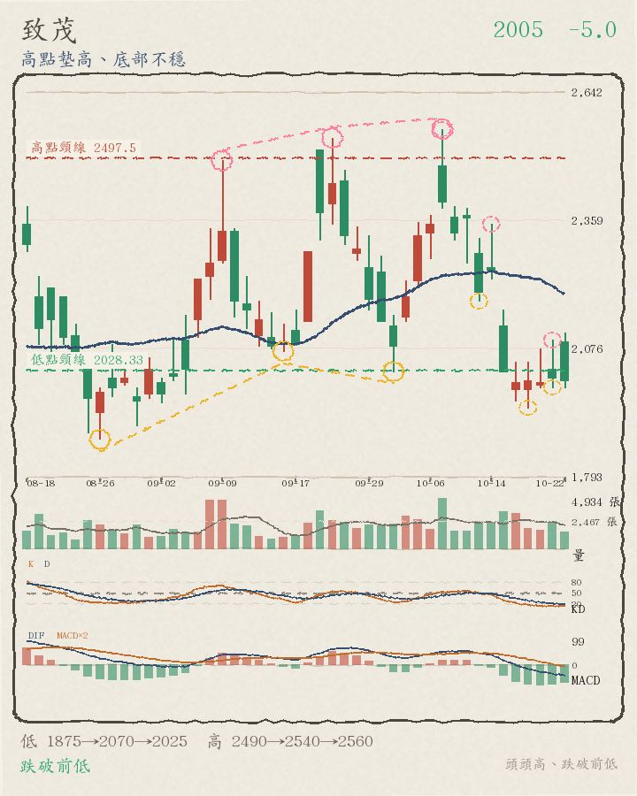
12:30 盤中 2005（-0.25%），比加權指數強 1.02 個百分點、跌破月線 2214.25，離高點頸線 2497.5 還差 19.7%，高點還在墊高（但底部沒同步墊高）。
- 月線位置：現價 2005 在月線 2214.25 之下（-9.4%）；5 日線 2008 也在月線之下（短均在下）；月線向下
- 量能：以已過交易時間推估，今天成交量約是 20 日均量的 0.80 倍（量平），比 20 日均量少很多
- 關鍵價位：已跌破前一個轉折低點；高點頸線 2497.5 還在現價上方 19.7%；前一交易日高點 2095（低於 4.3%）；今天盤中高點 2110（低於 5.0%）；今天盤中低點 1990（高於 0.8%）
- 轉折結構：高點 2490、2540、2560 墊高（頭頭高），但低點 1875、2070、2025 沒有同步墊高；還沒確認的轉折低點 10-19 1945、10-21 1990；還沒確認的轉折高點 10-14 2350、10-21 2095（圖上虛線小圈）
尖點 8021 上市
489 -17.0（-3.36%）
區間或轉弱 盤中成交值 32.38 億・全榜第 53 名（上市第 43 名）・相對大盤 -2.09
好條件 1/8：月線向上
不好條件 5/8：今日下跌、相對大盤弱、在月線之下、量增下跌（出貨）、跌破昨日低點
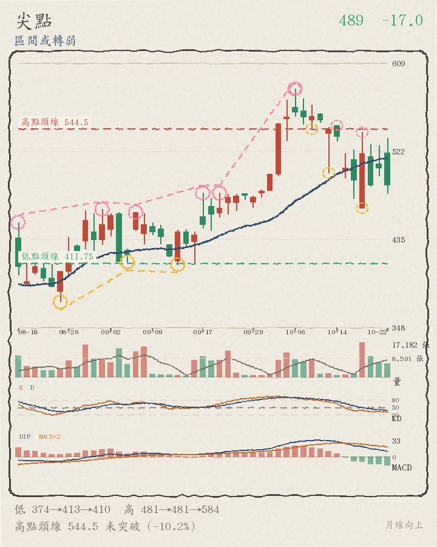
12:30 盤中 489（-3.36%），比加權指數弱 2.09 個百分點、跌破月線 514.457，離高點頸線 544.5 還差 10.2%，轉折還沒走出明顯方向。
- 月線位置：現價 489 在月線 514.457 之下（-5.0%）；5 日線 503 也在月線之下（短均在下）；月線向上
- 量能：以已過交易時間推估，今天成交量約是 20 日均量的 1.49 倍（量增），比 20 日均量大不少；下跌卻量增，量價背離
- 關鍵價位：高點頸線 544.5 還沒突破，差 10.2%；前一交易日高點 528（低於 7.4%）；今天盤中高點 535（低於 8.6%）；今天盤中低點 480.5（高於 1.8%）
- 轉折結構：低點 373.5、413、410.5 與高點 481、481、584 都沒有明顯遞增，屬於區間震盪或轉弱；還沒確認的轉折低點 10-13 501、10-19 466；還沒確認的轉折高點 10-14 548、10-19 541（圖上虛線小圈）
金山電 8042 上櫃
137.5 -11.0（-7.41%）
底部墊高、未過前高 盤中成交值 32.3 億・全榜第 54 名（上櫃第 11 名）・相對大盤 -6.14
好條件 4/8：站上月線、月線向上、底底高、突破頸線
不好條件 4/8：今日下跌、相對大盤弱、量增下跌（出貨）、跌破昨日低點
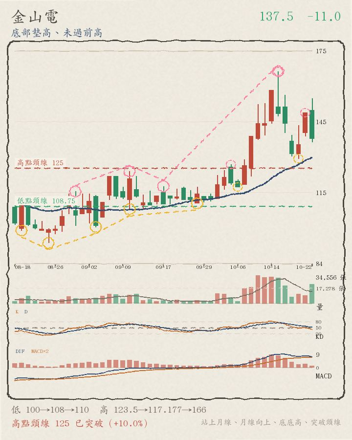
12:30 盤中 137.5（-7.41%），比加權指數弱 6.14 個百分點、站上月線 128.21，已突破高點頸線 125，底部還在墊高（但高點沒同步創高）。
- 月線位置：現價 137.5 在月線 128.21 之上（+7.2%）；5 日線 141.3 也在月線之上（短均在上）；月線向上
- 量能：以已過交易時間推估，今天成交量約是 20 日均量的 2.34 倍（爆量），比 20 日均量大不少；下跌卻量增，量價背離
- 關鍵價位：高點頸線 125 已站上；前一交易日高點 148.5（低於 7.4%）；今天盤中高點 154.5（低於 11.0%）；今天盤中低點 136（高於 1.1%）
- 轉折結構：低點 100、107.5、110 墊高（底底高），但高點 123.5、117.177、166 沒有同步創高；還沒確認的轉折低點 10-06 117、10-20 129；還沒確認的轉折高點 10-15 166、10-21 148.5（圖上虛線小圈）
台塑化 6505 上市
106 -3.5（-3.20%）
底部墊高、未過前高 盤中成交值 31.15 億・全榜第 55 名（上市第 44 名）・相對大盤 -1.93
好條件 3/8：站上月線、月線向上、底底高
不好條件 4/8：今日下跌、相對大盤弱、貼近今日低點（1% 內）、跌破昨日低點
12:30 盤中 106（-3.20%），比加權指數弱 1.93 個百分點、站上月線 103.33，離高點頸線 128.5 還差 17.5%，底部還在墊高（但高點沒同步創高）。
- 月線位置：現價 106 在月線 103.33 之上（+2.6%）；5 日線 113.2 也在月線之上（短均在上）；月線向上
- 量能：以已過交易時間推估，今天成交量約是 20 日均量的 0.92 倍（量平），比 20 日均量少一些
- 關鍵價位：高點頸線 128.5 還沒突破，差 17.5%；前一交易日高點 112.5（低於 5.8%）；今天盤中高點 114（低於 7.0%）；今天盤中低點 105.5（高於 0.5%）
- 轉折結構：低點 65.4、68.6、80 墊高（底底高），但高點 90.6、89.8、129 沒有同步創高；還沒確認的轉折低點 10-15 108、10-20 106.5；還沒確認的轉折高點 10-14 129、10-19 128（圖上虛線小圈）
川湖 2059 上市
9850 -230.0（-2.28%）
區間或轉弱 盤中成交值 31.13 億・全榜第 56 名（上市第 45 名）・相對大盤 -1.01
好條件 0/8：無
不好條件 6/8：今日下跌、相對大盤弱、在月線之下、貼近今日低點（1% 內）、跌破昨日低點、月線下彎
12:30 盤中 9850（-2.28%），比加權指數弱 1.01 個百分點、跌破月線 11382，離高點頸線 10377.5 還差 5.1%，轉折還沒走出明顯方向。
- 月線位置：現價 9850 在月線 11382 之下（-13.5%）；5 日線 9955 也在月線之下（短均在下）；月線向下
- 量能：以已過交易時間推估，今天成交量約是 20 日均量的 0.73 倍（量平），比 20 日均量少很多
- 關鍵價位：高點頸線 10377.5 還沒突破，差 5.1%；前一交易日高點 10580（低於 6.9%）；今天盤中高點 10255（低於 3.9%）；今天盤中低點 9780（高於 0.7%）
- 轉折結構：低點 11665、11700、9500 與高點 14200、13305、13500 都沒有明顯遞增，屬於區間震盪或轉弱；還沒確認的轉折低點 10-15 9500、10-19 9690；還沒確認的轉折高點 10-16 10175、10-21 10580（圖上虛線小圈）
量平
↑ 回上方清單
矽力*-KY 6415 上市
473 -17.0（-3.47%）
上升趨勢（底底高＋頭頭高） 盤中成交值 29.71 億・全榜第 57 名（上市第 46 名）・相對大盤 -2.20
好條件 4/8：站上月線、月線向上、底底高、頭頭高
不好條件 4/8：今日下跌、相對大盤弱、量增下跌（出貨）、貼近今日低點（1% 內）
12:30 盤中 473（-3.47%），比加權指數弱 2.20 個百分點、站上月線 444.925，離高點頸線 507.5 還差 6.8%，轉折結構仍是底底高＋頭頭高。
- 月線位置：現價 473 在月線 444.925 之上（+6.3%）；5 日線 476.7 也在月線之上（短均在上）；月線向上
- 量能：以已過交易時間推估，今天成交量約是 20 日均量的 2.12 倍（爆量），比 20 日均量大不少；下跌卻量增，量價背離
- 關鍵價位：高點頸線 507.5 還沒突破，差 6.8%；前一交易日高點 498.5（低於 5.1%）；今天盤中高點 508（低於 6.9%）；今天盤中低點 472（高於 0.2%）
- 轉折結構：低點 385、406.5、412 一路墊高、高點 443、475、513 也一路墊高，是底底高＋頭頭高；還沒確認的轉折低點 10-13 412、10-19 453；還沒確認的轉折高點 10-16 513、10-21 498.5（圖上虛線小圈）
世芯-KY 3661 上市
3575 -135.0（-3.64%）
區間或轉弱 盤中成交值 28.92 億・全榜第 58 名（上市第 47 名）・相對大盤 -2.37
好條件 1/8：月線向上
不好條件 5/8：今日下跌、相對大盤弱、在月線之下、貼近今日低點（1% 內）、跌破昨日低點
12:30 盤中 3575（-3.64%），比加權指數弱 2.37 個百分點、跌破月線 3871，離高點頸線 3777.5 還差 5.4%，轉折還沒走出明顯方向。
- 月線位置：現價 3575 在月線 3871 之下（-7.7%）；5 日線 3691 也在月線之下（短均在下）；月線向上
- 量能：以已過交易時間推估，今天成交量約是 20 日均量的 0.44 倍（量縮），比 20 日均量少很多
- 關鍵價位：高點頸線 3777.5 還沒突破，差 5.4%；前一交易日高點 3835（低於 6.8%）；今天盤中高點 3780（低於 5.4%）；今天盤中低點 3550（高於 0.7%）
- 轉折結構：低點 2630、3585、3260 與高點 4350、3950、4490 都沒有明顯遞增，屬於區間震盪或轉弱；還沒確認的轉折低點 10-06 3850、10-19 3555；還沒確認的轉折高點 10-12 4490、10-21 3835（圖上虛線小圈）
信驊 5274 上櫃
16000 -515.0（-3.12%）
區間或轉弱 盤中成交值 27.52 億・全榜第 59 名（上櫃第 12 名）・相對大盤 -1.85
好條件 0/8：無
不好條件 5/8：今日下跌、相對大盤弱、在月線之下、貼近今日低點（1% 內）、月線下彎

12:30 盤中 16000（-3.12%），比加權指數弱 1.85 個百分點、跌破月線 18198.5，離高點頸線 16630 還差 3.8%，轉折還沒走出明顯方向。
- 月線位置：現價 16000 在月線 18198.5 之下（-12.1%）；5 日線 16164 也在月線之下（短均在下）；月線向下
- 量能：以已過交易時間推估，今天成交量約是 20 日均量的 0.79 倍（量平），比 20 日均量少很多
- 關鍵價位：高點頸線 16630 還沒突破，差 3.8%；前一交易日高點 16640（低於 3.8%）；今天盤中高點 17000（低於 5.9%）；今天盤中低點 15995（高於 0.0%）
- 轉折結構：低點 14600、17170、15975 與高點 21800、19895、18465 都沒有明顯遞增，屬於區間震盪或轉弱；還沒確認的轉折低點 10-15 15750、10-19 15500；還沒確認的轉折高點 10-16 16620、10-21 16640（圖上虛線小圈）
量平
↑ 回上方清單
台塑 1301 上市
73.9 -3.1（-4.03%）
高點墊高、底部不穩 盤中成交值 26.96 億・全榜第 60 名（上市第 48 名）・相對大盤 -2.76
好條件 4/8：站上月線、月線向上、頭頭高、突破頸線
不好條件 4/8：今日下跌、相對大盤弱、貼近今日低點（1% 內）、跌破昨日低點
12:30 盤中 73.9（-4.03%），比加權指數弱 2.76 個百分點、站上月線 73.15，已突破高點頸線 70.4，高點還在墊高（但底部沒同步墊高）。
- 月線位置：現價 73.9 在月線 73.15 之上（+1.0%）；5 日線 78.78 也在月線之上（短均在上）；月線向上
- 量能：以已過交易時間推估，今天成交量約是 20 日均量的 0.62 倍（量縮），比 20 日均量少很多
- 關鍵價位：高點頸線 70.4 已站上；前一交易日高點 78.2（低於 5.5%）；今天盤中高點 78（低於 5.3%）；今天盤中低點 73.6（高於 0.4%）
- 轉折結構：高點 61.8、71.2、89.4 墊高（頭頭高），但低點 64.1、61.2、62 沒有同步墊高；還沒確認的轉折低點 10-15 80.2、10-20 74.4；還沒確認的轉折高點 10-15 89.4、10-21 78.2（圖上虛線小圈）
德宏 5475 上櫃
202.5 -11.5（-5.37%）
高點墊高、底部不穩 盤中成交值 26.75 億・全榜第 61 名（上櫃第 13 名）・相對大盤 -4.10
好條件 3/8：站上月線、月線向上、頭頭高
不好條件 4/8：今日下跌、相對大盤弱、量增下跌（出貨）、跌破昨日低點
12:30 盤中 202.5（-5.37%），比加權指數弱 4.10 個百分點、站上月線 193.125，離高點頸線 214.25 還差 5.5%，高點還在墊高（但底部沒同步墊高）。
- 月線位置：現價 202.5 在月線 193.125 之上（+4.8%）；5 日線 208.4 也在月線之上（短均在上）；月線向上
- 量能：以已過交易時間推估，今天成交量約是 20 日均量的 2.98 倍（爆量），比 20 日均量大不少；下跌卻量增，量價背離
- 關鍵價位：高點頸線 214.25 還沒突破，差 5.5%；前一交易日高點 244.5（低於 17.2%）；今天盤中高點 225（低於 10.0%）；今天盤中低點 199（高於 1.8%）
- 轉折結構：高點 203.5、195、215 墊高（頭頭高），但低點 156、176、168 沒有同步墊高；還沒確認的轉折低點 10-19 184、10-21 207；還沒確認的轉折高點 10-14 213.5、10-21 244.5（圖上虛線小圈）
聯一光 3441 上櫃
217.5 -24.0（-9.94%）
上升趨勢（底底高＋頭頭高） 盤中成交值 26.4 億・全榜第 62 名（上櫃第 14 名）・相對大盤 -8.67
好條件 4/8：月線向上、底底高、頭頭高、突破頸線
不好條件 5/8：今日下跌、相對大盤弱、在月線之下、量增下跌（出貨）、跌破昨日低點
12:30 盤中 217.5（-9.94%），比加權指數弱 8.67 個百分點、跌破月線 220.6，已突破高點頸線 142.25，轉折結構仍是底底高＋頭頭高。
- 月線位置：現價 217.5 在月線 220.6 之下（-1.4%）；5 日線 243.3 也在月線之上（短均在上）；月線向上
- 量能：以已過交易時間推估，今天成交量約是 20 日均量的 2.38 倍（爆量），比 20 日均量大不少；下跌卻量增，量價背離
- 關鍵價位：高點頸線 142.25 已站上；前一交易日高點 293.5（低於 25.9%）；今天盤中高點 253（低於 14.0%）；今天盤中低點 217.5（高於 0.0%）
- 轉折結構：低點 123.5、172.5、213.5 一路墊高、高點 144、201、280.5 也一路墊高，是底底高＋頭頭高；還沒確認的轉折低點 10-19 217、10-21 241.5；還沒確認的轉折高點 10-12 250.5、10-21 293.5（圖上虛線小圈）
光頡 3624 上櫃
135.5 -14.5（-9.67%）
底部墊高、未過前高 盤中成交值 26.08 億・全榜第 63 名（上櫃第 15 名）・相對大盤 -8.40
好條件 2/8：月線向上、底底高
不好條件 5/8：今日下跌、相對大盤弱、在月線之下、貼近今日低點（1% 內）、跌破昨日低點
12:30 盤中 135.5（-9.67%），比加權指數弱 8.40 個百分點、跌破月線 147.75，離高點頸線 180.25 還差 24.8%，底部還在墊高（但高點沒同步創高）。
- 月線位置：現價 135.5 在月線 147.75 之下（-8.3%）；5 日線 145.1 也在月線之下（短均在下）；月線向上
- 量能：以已過交易時間推估，今天成交量約是 20 日均量的 0.95 倍（量平），跟 20 日均量差不多
- 關鍵價位：高點頸線 180.25 還沒突破，差 24.8%；前一交易日高點 150（低於 9.7%）；今天盤中高點 154（低於 12.0%）；今天盤中低點 135（高於 0.4%）
- 轉折結構：低點 81.8、84.8、115 墊高（底底高），但高點 99.4、98.9、180.5 沒有同步創高；還沒確認的轉折低點 10-13 159、10-20 134；還沒確認的轉折高點 10-14 180、10-21 150（圖上虛線小圈）
貿聯-KY 3665 上市
1900 -50.0（-2.56%）
高點墊高、底部不穩 盤中成交值 25.71 億・全榜第 64 名（上市第 49 名）・相對大盤 -1.29
好條件 1/8：頭頭高
不好條件 6/8：今日下跌、相對大盤弱、在月線之下、貼近今日低點（1% 內）、跌破昨日低點、月線下彎
12:30 盤中 1900（-2.56%），比加權指數弱 1.29 個百分點、跌破月線 2278.75，離高點頸線 2378.33 還差 20.1%，高點還在墊高（但底部沒同步墊高）。
- 月線位置：現價 1900 在月線 2278.75 之下（-16.6%）；5 日線 1976 也在月線之下（短均在下）；月線向下
- 量能：以已過交易時間推估，今天成交量約是 20 日均量的 0.49 倍（量縮），比 20 日均量少很多
- 關鍵價位：高點頸線 2378.33 還沒突破，差 20.1%；前一交易日高點 2080（低於 8.7%）；今天盤中高點 1985（低於 4.3%）；今天盤中低點 1895（高於 0.3%）
- 轉折結構：高點 2360、2375、2685 墊高（頭頭高），但低點 2095、1930、1810 沒有同步墊高；還沒確認的轉折低點 10-19 1920、10-20 1920；還沒確認的轉折高點 10-08 2400、10-21 2080（圖上虛線小圈）
頎邦 6147 上櫃
206.5 -7.0（-3.28%）
底部墊高、未過前高 盤中成交值 25.64 億・全榜第 65 名（上櫃第 16 名）・相對大盤 -2.01
好條件 2/8：月線向上、底底高
不好條件 6/8：跌破前低、今日下跌、相對大盤弱、在月線之下、貼近今日低點（1% 內）、跌破昨日低點
12:30 盤中 206.5（-3.28%），比加權指數弱 2.01 個百分點、跌破月線 217.775，離高點頸線 234 還差 11.8%，底部還在墊高（但高點沒同步創高）。
- 月線位置：現價 206.5 在月線 217.775 之下（-5.2%）；5 日線 209.2 也在月線之下（短均在下）；月線向上
- 量能：以已過交易時間推估，今天成交量約是 20 日均量的 0.44 倍（量縮），比 20 日均量少很多
- 關鍵價位：已跌破前一個轉折低點；高點頸線 234 還在現價上方 11.8%；前一交易日高點 217（低於 4.8%）；今天盤中高點 216.5（低於 4.6%）；今天盤中低點 205.5（高於 0.5%）
- 轉折結構：低點 171、208、211 墊高（底底高），但高點 233、238、238 沒有同步創高；還沒確認的轉折低點 10-13 216.5、10-19 194.5；還沒確認的轉折高點 10-14 233、10-21 217（圖上虛線小圈）
台泥 1101 上市
28.05 +1.2（+4.66%）
高點墊高、底部不穩 盤中成交值 24.26 億・全榜第 66 名（上市第 50 名）・相對大盤 +5.93
好條件 7/8：站上月線、月線向上、頭頭高、突破頸線、相對大盤強、攻擊量（量增＋上漲）、守住今日高檔（距今日高點 1% 內）
不好條件 0/8：無
12:30 盤中 28.05（+4.66%），比加權指數強 5.93 個百分點、站上月線 25.937，已突破高點頸線 27.25，高點還在墊高（但底部沒同步墊高）。
- 月線位置：現價 28.05 在月線 25.937 之上（+8.2%）；5 日線 26.97 也在月線之上（短均在上）；月線向上
- 量能：以已過交易時間推估，今天成交量約是 20 日均量的 2.23 倍（爆量），比 20 日均量大不少；上漲又量增，量價配合
- 關鍵價位：高點頸線 27.25 已站上；前一交易日高點 27.15（高於 3.3%）；今天盤中高點 28.2（低於 0.5%）；今天盤中低點 27.05（高於 3.7%）
- 轉折結構：高點 25、26.7、27.7 墊高（頭頭高），但低點 24.2、23.75、24.8 沒有同步墊高；還沒確認的轉折低點 10-15 26.6、10-21 26.55；還沒確認的轉折高點 10-16 27.7、10-20 27.25（圖上虛線小圈）
旺矽 6223 上櫃
4860 -145.0（-2.90%）
區間或轉弱 盤中成交值 24.15 億・全榜第 67 名（上櫃第 17 名）・相對大盤 -1.63
好條件 0/8：無
不好條件 7/8：跌破前低、今日下跌、相對大盤弱、在月線之下、貼近今日低點（1% 內）、跌破昨日低點、月線下彎
12:30 盤中 4860（-2.90%），比加權指數弱 1.63 個百分點、跌破月線 5421，離高點頸線 5842.5 還差 16.8%，轉折還沒走出明顯方向。
- 月線位置：現價 4860 在月線 5421 之下（-10.3%）；5 日線 5129 也在月線之下（短均在下）；月線向下
- 量能：以已過交易時間推估，今天成交量約是 20 日均量的 0.63 倍（量縮），比 20 日均量少很多
- 關鍵價位：已跌破前一個轉折低點；高點頸線 5842.5 還在現價上方 16.8%；前一交易日高點 5150（低於 5.6%）；今天盤中高點 5170（低於 6.0%）；今天盤中低點 4850（高於 0.2%）
- 轉折結構：低點 5365、5090、4995 與高點 6060、5860、6160 都沒有明顯遞增，屬於區間震盪或轉弱；還沒確認的轉折低點 10-16 4950、10-20 4865；還沒確認的轉折高點 10-13 6160、10-20 5370（圖上虛線小圈）
群聯 8299 上櫃
1900 -30.0（-1.55%）
區間或轉弱 盤中成交值 22.82 億・全榜第 68 名（上櫃第 18 名）・相對大盤 -0.28
好條件 0/8：無
不好條件 5/8：跌破前低、今日下跌、相對大盤弱、在月線之下、月線下彎
12:30 盤中 1900（-1.55%），比加權指數弱 0.28 個百分點、跌破月線 2039，離高點頸線 1947.5 還差 2.4%，轉折還沒走出明顯方向。
- 月線位置：現價 1900 在月線 2039 之下（-6.8%）；5 日線 1868 也在月線之下（短均在下）；月線向下
- 量能：以已過交易時間推估，今天成交量約是 20 日均量的 0.50 倍（量縮），比 20 日均量少很多
- 關鍵價位：已跌破前一個轉折低點；高點頸線 1947.5 還在現價上方 2.4%；前一交易日高點 1945（低於 2.3%）；今天盤中高點 1945（低於 2.3%）；今天盤中低點 1900（高於 0.0%）
- 轉折結構：低點 1970、1900、2080 與高點 2195、2160、2350 都沒有明顯遞增，屬於區間震盪或轉弱；還沒確認的轉折低點 10-15 1800、10-19 1785；還沒確認的轉折高點 10-16 1950、10-21 1945（圖上虛線小圈）
營邦 3693 上櫃
647 -71.0（-9.89%）
上升趨勢（底底高＋頭頭高） 盤中成交值 18.82 億・全榜第 69 名（上櫃第 19 名）・相對大盤 -8.62
好條件 3/8：月線向上、底底高、頭頭高
不好條件 6/8：跌破前低、今日下跌、相對大盤弱、在月線之下、量增下跌（出貨）、跌破昨日低點
12:30 盤中 647（-9.89%），比加權指數弱 8.62 個百分點、跌破月線 709.1，離高點頸線 732 還差 11.6%，轉折結構仍是底底高＋頭頭高。
- 月線位置：現價 647 在月線 709.1 之下（-8.8%）；5 日線 712.6 也在月線之上（短均在上）；月線向上
- 量能：以已過交易時間推估，今天成交量約是 20 日均量的 1.83 倍（爆量），比 20 日均量大不少；下跌卻量增，量價背離
- 關鍵價位：已跌破前一個轉折低點；高點頸線 732 還在現價上方 11.6%；前一交易日高點 742（低於 12.8%）；今天盤中高點 725（低於 10.8%）；今天盤中低點 647（高於 0.0%）
- 轉折結構：低點 637、643、691 一路墊高、高點 719、748、789 也一路墊高，是底底高＋頭頭高；還沒確認的轉折低點 10-13 691、10-19 658；還沒確認的轉折高點 10-14 759、10-20 748（圖上虛線小圈）
中美晶 5483 上櫃
189.5 -9.5（-4.77%）
高點墊高、底部不穩 盤中成交值 18.26 億・全榜第 70 名（上櫃第 20 名）・相對大盤 -3.50
好條件 2/8：月線向上、頭頭高
不好條件 5/8：今日下跌、相對大盤弱、在月線之下、貼近今日低點（1% 內）、跌破昨日低點
12:30 盤中 189.5（-4.77%），比加權指數弱 3.50 個百分點、跌破月線 203.125，離高點頸線 203.83 還差 7.0%，高點還在墊高（但底部沒同步墊高）。
- 月線位置：現價 189.5 在月線 203.125 之下（-6.7%）；5 日線 195.9 也在月線之下（短均在下）；月線向上
- 量能：以已過交易時間推估，今天成交量約是 20 日均量的 0.56 倍（量縮），比 20 日均量少很多
- 關鍵價位：高點頸線 203.83 還沒突破，差 7.0%；前一交易日高點 200（低於 5.2%）；今天盤中高點 201（低於 5.7%）；今天盤中低點 188.5（高於 0.5%）
- 轉折結構：高點 187.5、202、229.5 墊高（頭頭高），但低點 173、170、181.5 沒有同步墊高；還沒確認的轉折低點 10-13 199.5、10-19 188；還沒確認的轉折高點 10-14 209.5、10-21 200（圖上虛線小圈）